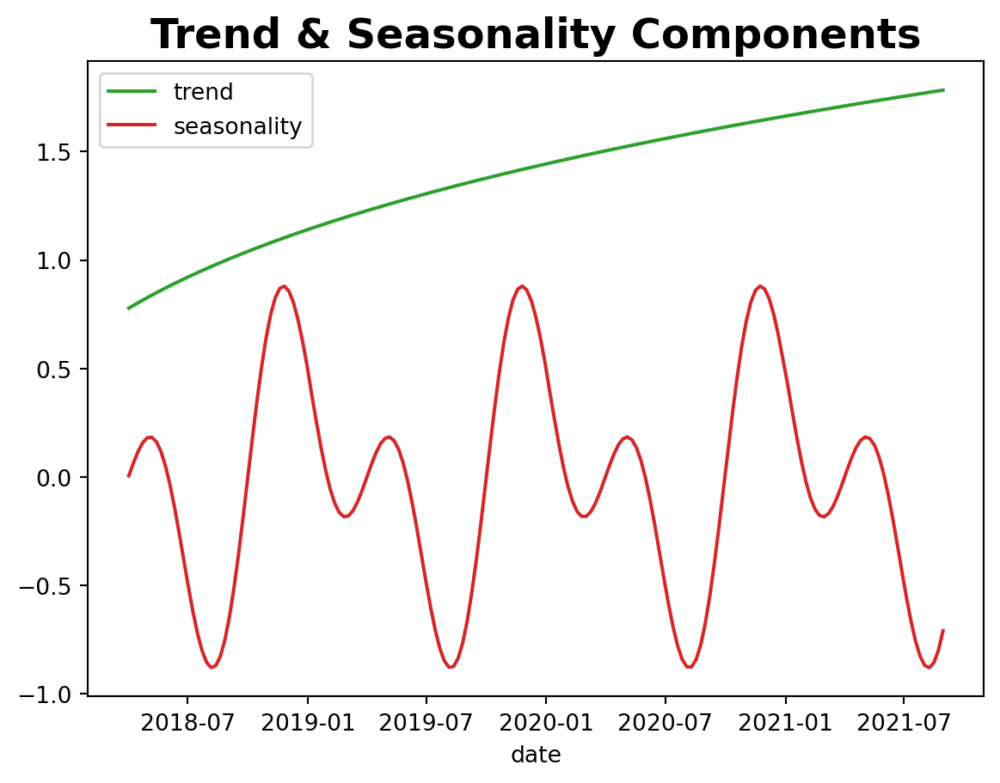
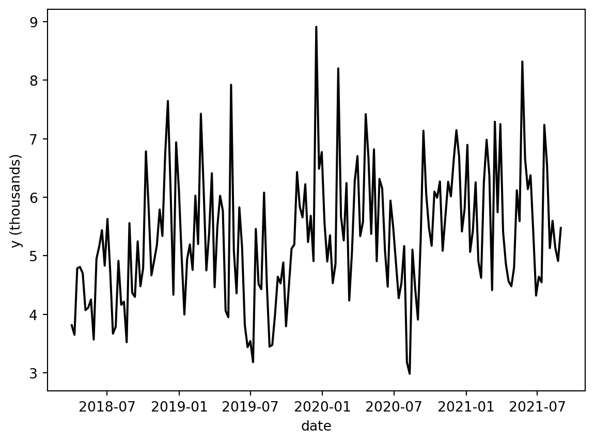
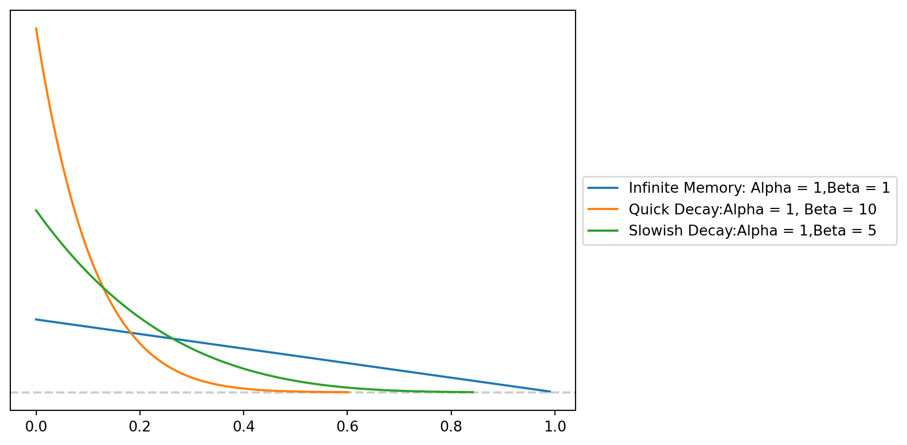
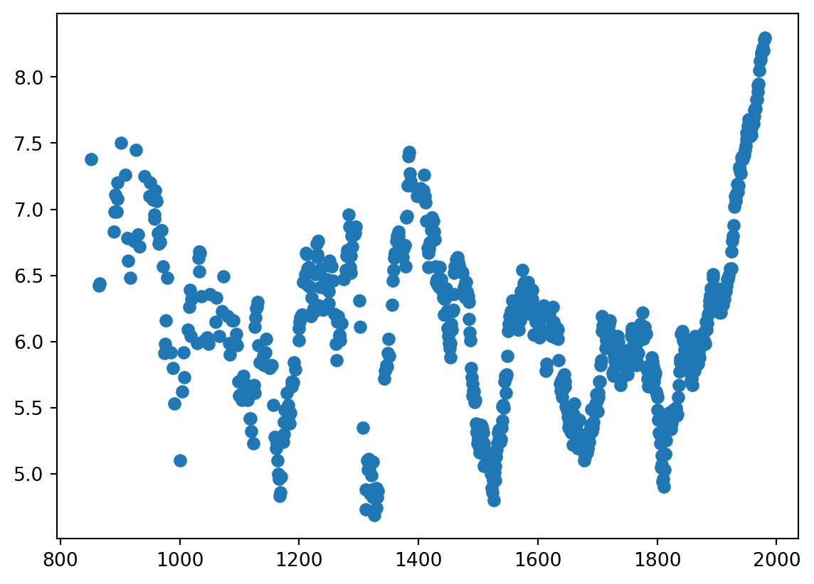
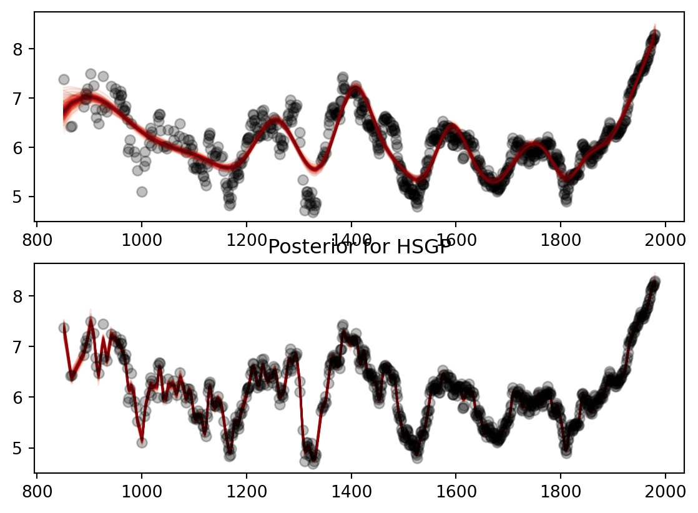
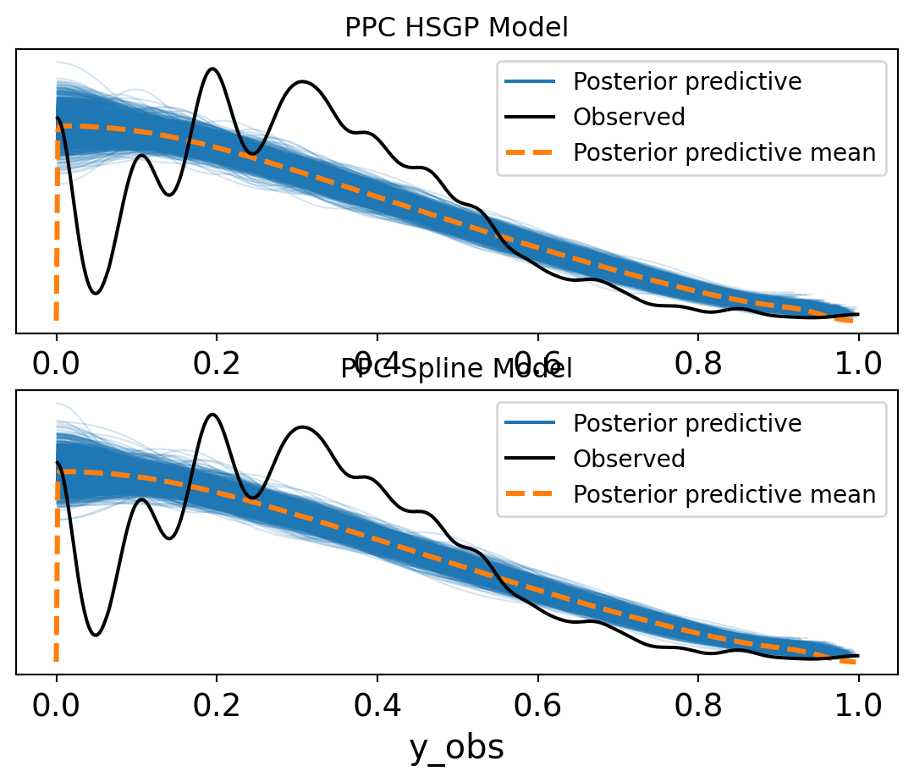
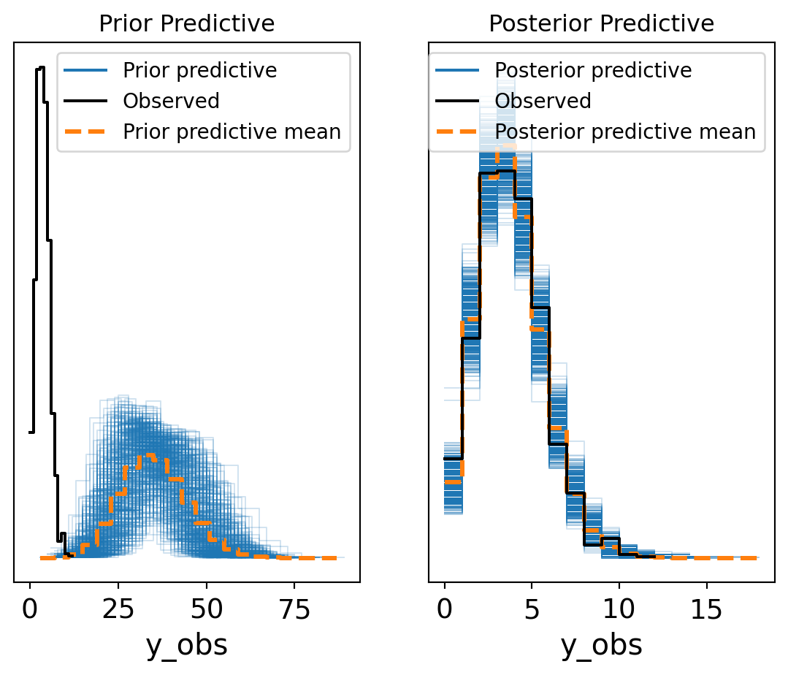

| Number of RBs | Number of TEs | Personnel Package |
|---|---|---|
| 1 | 1 | 11 |
| 1 | 2 | 12 |
| 1 | 3 | 13 |
| 2 | 1 | 21 |
| 2 | 2 | 22 |
What Marketing Taught Me About Football
And What Football Taught Me about Marketing
Introduction
The rise of McVay’s use of 13 personnel made me think of an old Athletic Football Show episode where they pointed out the use of auxiliary runs to get to explosives. This got me thinking about how can we model the returns on NFL plays? A major talking point in the 2025 season was Sean McVay’s usage of 13 personnel to force another linebacker onto the field. The benefit of this is that the offense has heavier bodies on the field to help the run game, but you are keeping more eligible receivers on the field. Since Kyle Shanahan and Sean McVay started as head coaches 8 years ago, they have been two of the best play callers and play designers in the game. One way that their offenses are so good is that they find different ways to generate explosive plays. Typically, explosive plays are defined as runs of ten plus yards or pass plays of twenty plus yards. Effectively, you are gaining the equivalent of one plus first down on one play, shortening the field and reducing the number of plays you have to run, or a quick touchdown.
There are various ways Kyle Shanahan and Sean McVay try to manipulate defenses. The most obvious way they do this is through pre-snap motion. Pre-snap motion can help the QB check into the right play by tipping whether a defense is in man or zone. Motion directly before the snap forces the defense to adjust run and pass assignments on the fly, creating and getting offensive players up to top speed before they start the play.
Another way that Kyle and Sean try to manufacture explosive plays is by using personnel packages in creative ways. Each personnel package has certain advantages. Generally, the idea is that you want a certain defensive personnel grouping on the field and leverage their weaknesses. To make sure we are on the same page on what different personnel packages mean, I have broken down the most common ones in Table 1. Conventionally, personnel packages are broken down by the number of RBs on the field and the number of TEs on the field.
Since the days of the big neckroll the league has shifted. Due to changes in the rules passing has massively upticked. As a result defenses have tried to combat this schematically by playing with less defenders in the box, more defensive backs, and more complex pass coverages. Early on Kyle and Sean used a lot of under-center play action so defenses would simply change the picture on the quarterback when their backs were turned. To counter this Kyle has used a lot of 21 personnel to force a conflict between defending the run with lighter bodies or defending the pass with heavier bodies.
With all the talk of 13 personnel this year and a ton of talk about pre-snap motion from the past few years I got kind of curious. What are the returns of some of these schematic trends and how can we model it? This is an interesting question for a variety of reasons. Should we focus on the design and mechanics of the play or should we focus more on what the bodies on the field get you? Well that kind of depends on a lot of things and as was the case for me what data you can access. Since I only have participation data I decided to look at explosive plays as a function of personnel grouping.
How Can We Model This?
There are lots of ways we can model this, but because play callers have these different personnel packages that they can use, my mind immediately went to Media Mixed Modeling (MMMs). What is an MMM? Let’s say you are in a marketing department at a large electronics company with a $1 million budget to spend on advertising. You spend that million dollars across various marketing channels, whether this search optimization, TV, email marketing, or influencer marketing.1 You then see that sales increased that month, but you want to know which channel was responsible for this spike, so you can invest your money more wisely. In the early digital marketing age, companies relied on multi-touch attribution models. The general idea of this was that if a consumer saw an ad on Facebook, clicked on it, and got the product. You could track those clicks back to the consumer and then estimate a model to better understand where to put your money.
However, around 2020 as a response to privacy concerns, laws passed by various governing bodies, and IOS14 these models started to break. More people started using ad blockers, Apple made tracking these attribution points much harder, and some people started using browsers that restricted access to what companies could track. In short, following the customer behavior got a lot harder. So marketing analytics turned to good old fashion experiments and MMMs. The general idea of an MMM is that weekly conversions, sales, revenue, etc., are a function of
\[ Sales_t = \alpha + \overbrace{\sum^{m}_{m=1}\beta_{m}F(x^{*}_{t,m})}^{\text{Impact of marketing}} + \overbrace{\sum^{c}_{c=1} \gamma_{c} Z_{t,c}}^{\text{Impact of Controls}} + \varepsilon_{t} \]
We can then go ahead and measure the relative contribution of each channel and forecast forward on where we should spend our money and about how much money we should spend on that channel. As you may imagine there are lots of gnarly time dynamics in marketing that you have to deal with. As an electronics company executive you would anticipate that every year in late October to early November sales effectively just stop as people wait for Black Friday sales. You also anticipate that there is only so many ads you can run on the same customer base before they stop caring.
Snapping back to football, this made me think of personnel groupings as channels. You more or less have a fixed number of plays per game which would track with a marketing budget. The play design may be more akin to a specific ad on each of these platforms to adapt to the user base and platform specific rules.2 In addition, both marketing and football deal with really noisy data that tries to capture complex behavioral dynamics, and you do not have a ton of data to work with generally. Based on this idea, I decided to try and build an MMM to understand how play-callers should invest their play budget. Perhaps just as importantly, this felt like a fun opportunity to figure out how to build an MMM.
Building a Regular MMM
Making The Data
For those only interested in the Football stuff you should just skip to the next section. For those sticking around for I am just working through the example provided by PyMC-Marketing.3 We are going to generate some synthetic data for a made up company at the weekly level over two years. This roughly equates to {python} 52*2 weeks of data.
Code
import arviz as az
import matplotlib.pyplot as plt
import numpy as np
import pandas as pd
import preliz as pz
import pymc as pm
import pytensor
import pytensor.tensor as pt
import seaborn as sns
from pymc_extras.prior import Prior
from pymc_marketing.mmm import GeometricAdstock, LogisticSaturation
from pymc_marketing.mmm.multidimensional import MMM
from pymc_marketing.mmm.transformers import geometric_adstock, logistic_saturation, michaelis_menten
from datetime import date
from pymc_marketing.mmm.hsgp import(
HSGP,
SoftPlusHSGP,
create_m_and_L_recommendations,
create_constrained_inverse_gamma_prior,
create_eta_prior,
CovFunc,
plot_curve
)
# seed from random.org
seed = 39233615
rng: np.random.Generator = np.random.default_rng(seed = seed)
min_date = date(2018, 4,1)
max_date= date(2021, 9, 1)
plt.rcParams['figure.figsize'] = [12,7]Media Costs
First we are going to generate two years worth of data
df = (pl.DataFrame({
'date_week': pl.date_range(min_date, max_date, "1d", eager = True)}
)
.filter(pl.col("date_week").dt.weekday() == 1)
.with_columns(
pl.col('date_week').dt.year().alias('year'),
pl.col('date_week').dt.month().alias('month'),
pl.col('date_week').dt.ordinal_day().alias('day_of_year')
)
)Next, we are going to generate synthetic data for two channels. These are going to be a bit different based on carryover and the saturation parameters. Roughly the costs for each of the channels look like this.
Code
n = df.height
x1 = rng.uniform(low = 0.0, high = 1.0, size = n)
x2 = rng.uniform(low = 0.0, high = 1.0, size = n)
df = (
df
.with_columns(
x1_raw = pl.Series(x1),
x2_raw = pl.Series(x2)
)
.with_columns(
pl.when(pl.col('x1_raw') > 0.9)
.then(pl.col('x1_raw'))
.otherwise((pl.col('x1_raw')/2))
.alias('x1'),
pl.when(pl.col('x2_raw') >0.8)
.then(pl.col("x2_raw"))
.otherwise(0)
.alias('x2')
)
.drop(['x1_raw', 'x2_raw'])
)
long_data = df.unpivot(on = ['x1','x2'], index = 'date_week')
fig, ax = plt.subplots()
sns.lineplot(data = long_data, x = 'date_week', y = 'value', hue = 'variable', alpha = 0.5)
Next we are going to pass each of these through our adstock function. In media marketing our adstock is effectively our carryover effect. If you see an ad one day how long is that going to stay with you?
Code
alpha1: float = 0.4
alpha2: float = 0.2
df = (
df
.with_columns(
pl.col('x1')
.map_batches(
lambda s: geometric_adstock(
x = s.to_numpy(),
alpha = alpha1,
l_max = 8,
normalize=True
).eval().flatten(),
return_dtype=pl.Float64
).alias('x1_adstock'),
pl.col('x2')
.map_batches(
lambda s: geometric_adstock(
x = s.to_numpy(),
alpha = alpha2,
l_max = 8,
normalize=True
).eval().flatten(),
return_dtype=pl.Float64
).alias('x2_adstock')
)
)The next thing we are going to do is add our concentration effects or how much money we are spending in each channel.
Code
lam1: float = 4.0
lam2: float = 3.0
df = (
df
.with_columns(
pl.col('x1_adstock')
.map_batches(
lambda s:
logistic_saturation(
x = s.to_numpy(),
lam = lam1
).eval().flatten(),
return_dtype=pl.Float64
).alias('x1_saturated_adstock'),
pl.col('x2_adstock')
.map_batches(
lambda s:
logistic_saturation(
x = s.to_numpy(),
lam = lam1
).eval().flatten(),
return_dtype=pl.Float64
).alias('x2_saturated_adstock')
)
)Then as always we are going to plot this to make sure everything is good.
long_effects = df.unpivot(on = cs.starts_with('x'), index = 'date_week')
g = sns.FacetGrid(data= long_effects, col = 'variable', col_wrap = 2)
g.map(sns.lineplot, 'date_week', 'value')
This is looks like the costs are pretty realistic.
Trend and Seasonal Parts
Now we are going to add some seasonality
Code
import math
df = df.with_columns(
trend=(
pl.linear_space(0.0, 50.0, n) # sequence 0..50 with n samples
.add(10.0)
.pow(1.0 / 4.0)
.sub(1.0)
),
cs=(
-(2.0 * 2.0 * math.pi * pl.col("day_of_year") / 365.5).sin()
),
cc=(
(1.0 * 2.0 * math.pi * pl.col("day_of_year") / 365.5).cos()
),
).with_columns(
seasonality=0.5 * (pl.col("cs") + pl.col("cc"))
)
fig, ax = plt.subplots()
sns.lineplot(x="date_week", y="trend", color="C2", label="trend", data=df, ax=ax)
sns.lineplot(
x="date_week", y="seasonality", color="C3", label="seasonality", data=df, ax=ax
)
ax.legend(loc="upper left")
ax.set(xlabel="date", ylabel=None)
ax.set_title("Trend & Seasonality Components", fontsize=18, fontweight="bold");
Making Controls
Finally, we will just add our dependent variable and our controls
Code
epsilon = rng.normal(loc = 0.0, scale = 0.25, size = n)
amplitude = 1
beta_1 = 3.0
beta_2 = 2.0
betas = [beta_1, beta_2]
df = (
df
.with_columns(
pl.lit(2.0).alias('intercept'),
pl.Series(epsilon).alias('epsilon'),
pl.lit(beta_1).alias('beta_1'),
pl.lit(beta_2).alias('beta_2'),
event_1=(pl.col("date_week") == date(2019, 5,13)).cast(pl.Float64),
event_2=(pl.col("date_week") == date(2020, 9, 14)).cast(pl.Float64),
)
.with_columns(
)
.with_columns(
(
pl.col('intercept')
+ pl.col('trend')
+ pl.col("seasonality")
+ pl.lit(1.5) * pl.col('event_1')
+ pl.lit(2.5) * pl.col('event_2')
+ pl.col('beta_1') * pl.col('x1_saturated_adstock')
+ pl.col('beta_2') * pl.col('x2_saturated_adstock')
+ pl.col('epsilon')
).alias('y')
)
)
fig, ax = plt.subplots()
sns.lineplot(x="date_week", y="y", color="black", data=df, ax=ax)
ax.set(xlabel="date", ylabel="y (thousands)")
We can now go ahead and look at the ground truth, but that is an exercise left for the reader.
Building The Regular MMM
For whatever reason, I found that working with PyMC is just easier to do in pandas so we are going to throw it over to Pandas. After going through Chris Fonnesbeck’s case study on goaltending performance I have figured out how to more cleanly implement categorical variables in Polars and PyMC so this is just kind of an artifact.
df_pd = df.to_pandas()
columns_to_keep = [
"date_week",
"y",
"x1",
"x2",
"event_1",
"event_2",
"day_of_year",
]
mod_df = df_pd[columns_to_keep]
mod_df['t'] = range(n)The whole stick of using Bayesian stats is to set appropriate priors. We know at least a few things
- Channel Contributions are positive and vary. So we are going to set a 1 sigma per channel. How much they vary is an open question. The wider the prior the more area we give the model to explore. This has some pros and cons.
- We kind of expect channels where we spend the most to have more attributed sales. We wouldn’t advertise a product targeted for an older audience on TikTok as an example.
spend_per_channel = mod_df[['x1', 'x2']].sum(axis = 0)
spend_share = spend_per_channel/spend_per_channel.sum()
sigma_prior = 2 * spend_share.to_numpy()
X = mod_df.drop('y', axis = 1)
y = mod_df['y']Next we are just going to define some priors.
my_priors= {
"intercept": Prior("Normal", mu=0.5, sigma=0.2),
"adstock_alpha": Prior("Beta", alpha=1, beta=3, dims="channel"),
"saturation_beta": Prior("HalfNormal", sigma=sigma_prior, dims="channel"),
"saturation_lam": Prior("Gamma", alpha=3, beta=1, dims="channel"),
"gamma_control": Prior("Normal", mu=0, sigma=0.05, dims="control"),
"gamma_fourier": Prior("Laplace", mu=0, b=0.2, dims="fourier_mode"),
"likelihood": Prior("Normal", sigma=Prior("HalfNormal", sigma=6)),
}
samp_config = {'progressbar': True, 'random_seed': seed, 'nuts_sampler': 'numpyro'}
mmm = MMM(
model_config=my_priors,
sampler_config=samp_config,
date_column="date_week",
adstock=GeometricAdstock(l_max=8),
saturation=LogisticSaturation(),
channel_columns=["x1", "x2"],
control_columns=["event_1", "event_2", "t"],
yearly_seasonality=2,
target_column = 'y'
)
mmm.build_model(X,y)
mmm.add_original_scale_contribution_variable(
var=[
"channel_contribution",
"control_contribution",
"intercept_contribution",
"yearly_seasonality_contribution",
"y",
]
)Since we have the ability to build a model where we know the true DGP we know these priors are pretty weakly informative. Basically all this means is that we want to give the model a large enough space to explore, but not so big that we let the model go from \(-\infty\) to \(\infty\)
What are some of these parameters?
So the entire crux of MMMs is that we don’t expect ads to work instantly, every additional ad to increase sales, and the effect of an ad to persist that much. The multiple avenues to see growth in the outcome of interest was what initially got me thinking about using these models. But when I started digging more into these models these time dynamics became what got me really excited to see how this could work. In this section I am going to borrow heavily from some excellent blog posts by Ryan O’Sullivan
Adstock
Adstock really just refers to the decay rate. So if I run an advertisement how quickly do those effects diminsh overtime. Typically adstock is constrained to be between zero and 1 so the Beta distribution is used more often than not. A vagueish prior would be a \(adstock \sim \beta(\alpha = 1, \beta = 3)\) or something that looks like this
fig, axe = plt.subplots()
pz.Beta(alpha = 1, beta = 3).plot_pdf()
To build an intuition on what that may mean practically we can simulate some spend
Code
raw_spend = np.array([1000, 900, 800, 700, 600, 500, 400, 300, 200, 100, 0, 0, 0, 0, 0, 0])
adstock_spend_1 = geometric_adstock(x=raw_spend, alpha=0.20, l_max=8, normalize=True).eval().flatten()
adstock_spend_2 = geometric_adstock(x=raw_spend, alpha=0.50, l_max=8, normalize=True).eval().flatten()
adstock_spend_3 = geometric_adstock(x=raw_spend, alpha=0.80, l_max=8, normalize=True).eval().flatten()
plt.figure(figsize=(10, 6))
plt.plot(raw_spend, marker='o', label='Raw Spend', color='blue')
plt.fill_between(range(len(raw_spend)), 0, raw_spend, color='blue', alpha=0.2)
plt.plot(adstock_spend_1, marker='o', label='Adstock (alpha=0.20)', color='orange')
plt.fill_between(range(len(adstock_spend_1)), 0, adstock_spend_1, color='orange', alpha=0.2)
plt.plot(adstock_spend_2, marker='o', label='Adstock (alpha=0.50)', color='red')
plt.fill_between(range(len(adstock_spend_2)), 0, adstock_spend_2, color='red', alpha=0.2)
plt.plot(adstock_spend_3, marker='o', label='Adstock (alpha=0.80)', color='purple')
plt.fill_between(range(len(adstock_spend_3)), 0, adstock_spend_3, color='purple', alpha=0.2)
plt.xlabel('Weeks')
plt.ylabel('Spend')
plt.title('Geometric Adstock')
plt.legend()
plt.show()
In effect, geometric adstock is just a weighted average of media spend in the current period and previous periods, where we make an assumption about the maximum duration of the carryover effect. As the alpha values decrease the impact of the spend overtime. Generally this is used for re-targeting or campaigns with calls to action. Typically the reason you would set a low alpha value is if you are reasonably confident customers have seen the ad you are just trying to get them back onto your website to do something. The Red Cross doesn’t want you to sit there and think about whether you should donate money after a hurricane or earthquake. They want to get you onto the website as quickly as possible to donate resources.
Inversely if you just get into post-production for a movie and you have a tenative release date 2 months from now running an ad that tries to get you to buy a ticket is not all that helpful. You may want run a campaign where you are trying to get people excited to go to the movies. You would set a higher alpha value to reflect this expected decay. One sticking point about adstock, for me, is that we refer to the alpha parameter, but when we are playing around with the priors to get more realistic looking decays you are going to be changing the beta parameter. So if we wanted to get a similar looking Beta we would do something to this effect.
fig, axe = plt.subplots()
pz.Beta(1,2 ).plot_pdf(legend = "Infinite Memory: Alpha = 1,Beta = 1")
pz.Beta(1,10).plot_pdf(legend = 'Quick Decay:Alpha = 1, Beta = 10')
pz.Beta(1, 5).plot_pdf(legend = 'Slowish Decay:Alpha = 1,Beta = 5')
To bring this back to football we can start to imagine how this dynamic arises. During the 2025 season the Rams gained a schematic advantage by using spending more plays in 13 personnel. This allowed the Rams to have heavier bodies on the field while also being able to keep more eligible receivers on the field. The Rams kind of stumbled into this because Puca Nacua sprains his ankle during week 6. We would expect a schematic wrinkle like this to have some boom as teams are caught on the backfoot. However, as the season progresses we expect to see those effects decay a bit. As you the season progresses we would expect explosive plays to regress as teams start to figure out the best ways to match personnel or scheme up ways to stop the Rams. Additionally, as the season progresses more guys tend to get injured so personnel groupings may be less effective. This frees up a defense to invest their resources elsewhere.
Saturation
Naturally in marketing and football we would expect that as we invest more resources in a particular channel or playoff grouping the returns start to diminish. With 13 personnel you do get some benefits in the run game. TE tend to be better blockers than wide receivers. However, their are only {python} 11 - (3 + 1 + 6) receivers on the field. You may have to sacrifice some route concepts that wide receivers would normally run since we wouldn’t expect most tight ends to be able to do that and sell the run fake.
Typically we but a Gamma prior on the saturation parameter. Typically we use Gammas or Inverse Gammas to handle things like rates which are strictly positive, but have no theoretical upper bounds. If you are waiting in line for something you could theoretically wait inline forever, but for the most part there is some practical upperbounds to waitimes.
Instead of zeroing in on the exact point where the decay happens we are going to place a prior on how quickly we expect diminishing returns start to happen. If we set our saturation to one we expect that for every additional spending unit we would expect the returns to diminish by about a unit. Whereas with a Lambda of 8 we hit that saturation point much quicker.
Code
scaled_spend = np.linspace(start=0.0, stop=1.0, num=100)
saturated_spend_1 = logistic_saturation(x=scaled_spend, lam=1).eval()
saturated_spend_2 = logistic_saturation(x=scaled_spend, lam=2).eval()
saturated_spend_4 = logistic_saturation(x=scaled_spend, lam=4).eval()
saturated_spend_8 = logistic_saturation(x=scaled_spend, lam=8).eval()
plt.figure(figsize=(8, 6))
sns.lineplot(x=scaled_spend, y=saturated_spend_1, label="1")
sns.lineplot(x=scaled_spend, y=saturated_spend_2, label="2")
sns.lineplot(x=scaled_spend, y=saturated_spend_4, label="4")
sns.lineplot(x=scaled_spend, y=saturated_spend_8, label="8")
plt.title('Logistic Saturation')
plt.xlabel('Scaled Marketing Spend')
plt.ylabel('Saturated Marketing Spend')
plt.legend(title='Lambda')
plt.show()
We can imagine that as we start to invest more plays into a personnel grouping we are leaving explosive plays out of other personnel groupings on the table. As we invest more plays in the 13 personnel bucket we may not be devouting time to other auxilary heavy personnel packages where with smaller investments we may see more returns. Hypothetically a team may have spent more time game planning for 13 and 11 personnel than some of the other potential personnel packages. So sprinkling in plays out of 21 could yield more explosive plays simply because the defense isn’t expecting the Rams to run a ton of 21.
Getting Predictions
So after that long aside lets fit the model.
mmm.fit(X = X,
y = y)Then we plot can check how we did by plotting the posterior predictive.
mmm.sample_posterior_predictive(X=X, random_seed = seed)
fig, axes = mmm.plot.posterior_predictive(var=["y_original_scale"], hdi_prob=0.94)
sns.lineplot(
data=df, x="date_week", y="y", color="black", label="Observed", ax=axes[0][0]
);
Importatly the entire bit of MMMs are that we can see the channel contributions over time. Importantly we want to see how impactful our spending campaign in comparision to our baseline. If say we spend 2 million dollars worth of ads across our two channels and we only see a lift of about $500,000 across the two channels. Does the additional spend actual meaningfully shift sales?If you are Coke then probably not but if you are upstart soda company this may be a potentially huge lift.
Code
base_contributions = (
mmm.idata["posterior"]["intercept_contribution_original_scale"]
+ mmm.idata["posterior"]["control_contribution_original_scale"].sum(dim="control")
+ mmm.idata["posterior"]["yearly_seasonality_contribution_original_scale"]
)
channel_x1 = mmm.idata["posterior"]["channel_contribution_original_scale"].sel(
channel="x1"
)
channel_x2 = mmm.idata["posterior"]["channel_contribution_original_scale"].sel(
channel="x2"
)
fig, ax = plt.subplots()
# Stack the contributions
dates = mmm.model.coords["date"]
base_mean = base_contributions.mean(dim=("chain", "draw")).to_numpy()
x1_mean = channel_x1.mean(dim=("chain", "draw")).to_numpy()
x2_mean = channel_x2.mean(dim=("chain", "draw")).to_numpy()
ax.fill_between(dates, 0, base_mean, alpha=0.7, color="gray", label="Base")
ax.fill_between(
dates,
base_mean,
base_mean + x1_mean,
alpha=0.7,
color="C0",
label="Channel x1",
)
ax.fill_between(
dates,
base_mean + x1_mean,
base_mean + x1_mean + x2_mean,
alpha=0.7,
color="C1",
label="Channel x2",
)
# Plot observed
sns.lineplot(data=df, x="date_week", y="y", color="black", label="Observed", ax=ax)
ax.legend(loc="upper left")
ax.set(xlabel="date", ylabel="y")
fig.suptitle("Contribution Breakdown over Time", fontsize=16, fontweight="bold");
It looks like we get a reasonable return on spending across both channels. It seems like channel two is giving us a bit more than channel 1.
The Problem
There are a lot of practical friction points with using the MMM class from PyMC-Marketing and my particular dataset. The big practical impediment is how time works. For sales data you are still going to see some level of sales each of the 52 weeks of the year. Even if one person buys something you are still getting a data point. Practically since we are jut modeling the regular season there are huge gaps in the time-series where nothing is happening. To give you a sense of what this looks like we are just going to bring our NFL data and plot it next to our fake sales data.
Code
from nflreadpy import load_pbp
import matplotlib.dates as mdates
pbp_1 = pl.read_parquet('blog-post-data/pbp-data1.parquet')
pbp_2 = pl.read_parquet('blog-post-data/pbp-data2.parquet')
raw_data = pl.concat([pbp_1, pbp_2], how = 'diagonal')
make_explosives = (
raw_data
.filter(pl.col('season_type') == 'REG')
.select(
pl.col('game_id', 'game_date', 'posteam' ,'play_type_nfl', 'receiving_yards', 'rushing_yards')
)
.filter(
(pl.col('play_type_nfl').is_in(['PASS', 'RUSH'])) &
(pl.col('posteam') == 'SF')
)
.with_columns(
pl.when(
(pl.col('play_type_nfl') == 'PASS') & (pl.col('receiving_yards') >= 20)
)
.then(1)
.when(
(pl.col('play_type_nfl') == 'RUSH') & (pl.col('rushing_yards') >= 10)
)
.then(1)
.otherwise(0)
.alias('is_explosive')
)
.with_columns(
pl.col('is_explosive').mean().over('game_id').alias('explosive_play_rate'),
pl.col('game_date').str.to_date()
)
.unique(subset = 'game_id')
.sort('game_date')
)
fig, axes = plt.subplots(nrows = 2)
axes[0].plot(
df['date_week'], df['y']
)
axes[0].set_title('Fake Sales Data')
axes[1].plot(
make_explosives['game_date'], make_explosives['explosive_play_rate']
)
axes[1].set_title('SF Explosive Play Rate')
axes[1].set_ylabel('Explosive Play Rate')
axes[1].set_xlabel('Game Date')
axes[1].xaxis.set_major_formatter(mdates.DateFormatter('%Y-%m'))
The important thing for now is to focus on the big gaps between seasons. Right now the line is simply trying to interpolate between seasons. This is just a general thing that these plotting libraries will do.
Why is this a problem? From a theoretical standpoint what happens during the season is important from week to week play callers are going to adapt to their schedule, player availability, how other teams are playing them, and succesful offensive concepts from others. The other important is does not capture what we care about between seasons, their tenure length does. Successful teams tend to suffer from brain drain. Right now there are 10 NFL head coaches that were either on Kyle Shanhan or Sean McVay’s staff at some point. This is not including current offensive coordinators like Mike McDaniel or Bobby Slowik who had previously worked on their staffs. As a coaching staff starts to experience brain drain we may start to see less returns in the area that they oversaw.
There is a practical tension on the implementation side. Marketing campaigns are naturally going to be on calendar time without huge gaps in the marketing campaign. Naturally, the implentation of and MMM by PyMC is going to make the sane decision to use valid date times. We could theoretically use the game date in the classs method but that results a in weird looking trends. Just passing an integer to the class method results in errors.
Football Stuff
If you skipped the non-football section I will give you a brief summary. One of the main motivations to use a MMM is that there are some similarities that make this model interesting. The first being that we expect the returns of new personnel formations and plays out of these formations to decay quickly. The second being that there is a theoretical saturation point where you are just trying to squeeze blood from a stone. In my own head that sounds a lot like the dynamics in a Football season. In this section I am going to go through the full model building process and the Bayesian workflow that led me to the final model. Then, I promise, I will get to the insights about play callers.
Building the Football Data
For the entire rest of the blog post, I rely on data provided by the nflverse team. Specifically, we are going to look at the participation data from 2017-2025. Prior to 2023, this data was provided by NFL NGS, while post 2023, the data are provided by FTN.4 Specifically, we are interested in the offensive formation columns and defensive personnel. To give you a sense of what this looks like I provide an example for the first 5 plays of the Titans vs Bears game in the 2024 season.
The first order of business is to only include offensive plays this is easy since there is a little flag to indicate whether it was a run, pass, special teams play etc. As far as regexs go this was a pretty simple one, but there is one tripping point. Typically, we count the fullback as a running back in these personnel packages, but in a much-appreciated effort to keep the raw data intact, they are recorded by their roster position. So, for the 49ers who typically run 21 personnel, you get this.
examp2 = (
load_participation()
.filter((pl.col('defenders_in_box') != 0) & (pl.col('possession_team') == 'SF'))
.select(pl.col("offense_personnel"))
.head(n = 5)
.with_columns(
pl.col('offense_personnel').str.extract("(\\d{1} RB)").str.replace('RB','').str.strip_chars_end().alias('n_rbs'),
pl.col('offense_personnel').str.extract("(\\d{1} TE)").str.replace('TE','').str.strip_chars_end().alias('n_tes'),
pl.col('offense_personnel').str.extract("(\\d{1} FB)").str.replace('FB','').str.strip_chars_end().alias('n_fb'),
)
.with_columns(
pl.concat_str([
pl.col('n_rbs'),
pl.col('n_tes')
]).alias('personnel_grouping')
)
)
GT(examp2.drop(['n_rbs', 'n_tes', 'n_fb']))| offense_personnel | personnel_grouping |
|---|---|
| 1 C, 1 FB, 2 G, 1 QB, 1 RB, 2 T, 1 TE, 2 WR | 11 |
| 1 C, 1 FB, 2 G, 1 QB, 1 RB, 2 T, 1 TE, 2 WR | 11 |
| 1 C, 2 G, 1 QB, 1 RB, 2 T, 1 TE, 3 WR | 11 |
| 1 C, 1 FB, 2 G, 1 QB, 1 RB, 2 T, 1 TE, 2 WR | 11 |
| 1 C, 1 FB, 2 G, 1 QB, 1 RB, 2 T, 1 TE, 2 WR | 11 |
The simple trick to this is just to add the RBs and Fullbacks together, than convert those back to strings.
fixed = (
examp2
.with_columns(
(pl.col('n_rbs').cast(pl.Int64).fill_null(0) + pl.col('n_fb').cast(pl.Int64).fill_null(0)).alias("total_rbs")
)
.with_columns(
pl.concat_str(
[ pl.lit('personnel_'),
pl.col('total_rbs').cast(pl.String),
pl.col('n_tes')
]
).alias('personnel_grouping_fixed')
).drop(['n_rbs', 'n_tes', 'n_fb', 'total_rbs'])
)
GT(fixed)| offense_personnel | personnel_grouping | personnel_grouping_fixed |
|---|---|---|
| 1 C, 1 FB, 2 G, 1 QB, 1 RB, 2 T, 1 TE, 2 WR | 11 | personnel_21 |
| 1 C, 1 FB, 2 G, 1 QB, 1 RB, 2 T, 1 TE, 2 WR | 11 | personnel_21 |
| 1 C, 2 G, 1 QB, 1 RB, 2 T, 1 TE, 3 WR | 11 | personnel_11 |
| 1 C, 1 FB, 2 G, 1 QB, 1 RB, 2 T, 1 TE, 2 WR | 11 | personnel_21 |
| 1 C, 1 FB, 2 G, 1 QB, 1 RB, 2 T, 1 TE, 2 WR | 11 | personnel_21 |
So now these values look saner than the ones that I initially came up with. The next step is to build the spend share variables and define the relevant time dimensions for the between-season. I did this in R just because the nflreadr version of the package lets you automatically merge the play-by-play data. For the play caller data, I am using Sam Hoppen’s data. I just take the minimum for each play caller in the dataset and then subtract it from the current season to get their tenure. This approach does have a drawback just because we would expect that there is a bigger jump for a new play caller from the start of their first season to the end of their first season.5 Whereas a more experienced play caller it may not actually matter that much by the time they hit year four or five. My “ad spend” is just the share of plays that each play caller makes out of each personnel grouping.
Code
library(nflreadr)
library(tidyverse)
df = load_participation(
seasons = c(2017:2025),
include_pbp = TRUE
) |>
filter(play_type_nfl %in% c('PASS', 'RUSH'), season_type == 'REG')
play_callers = read_csv(
"https://raw.githubusercontent.com/samhoppen/NFL_public/refs/heads/main/data/all_playcallers.csv"
) |>
select(
season,
team,
week,
game_id,
off_play_caller
) |>
mutate(
play_caller_mins = min(season),
.by = off_play_caller
) |>
mutate(play_caller_tenure = season - play_caller_mins)
add_play_callers = df |>
left_join(
play_callers,
join_by(nflverse_game_id == game_id, season, week, possession_team == team)
)
make_snap_shares = add_play_callers |>
mutate(
n_tes = str_extract(offense_personnel, "\\d+ TE"),
n_rbs = str_extract(offense_personnel, "\\d+ RB"),
n_fbs = str_extract(offense_personnel, "\\d+ FB"),
across(c(n_tes, n_rbs, n_fbs), \(x) ifelse(is.na(x), 0, x)),
across(c(n_tes, n_rbs, n_fbs), \(x) str_remove_all(x, "TE|RB|FB| ")),
across(c(n_rbs, n_fbs), \(x) as.numeric(x)),
n_rbs = as.character(n_rbs + n_fbs),
personnel_grouping = as.factor(str_glue("personnel_{n_rbs}{n_tes}"))
) |>
mutate(total_snaps = n(), .by = c(off_play_caller, nflverse_game_id)) |>
mutate(
snaps_by_personnel = n(),
.by = c(off_play_caller, nflverse_game_id, personnel_grouping)
) |>
mutate(share = (snaps_by_personnel / total_snaps)) |>
group_by(personnel_grouping, off_play_caller) |>
distinct(nflverse_game_id, .keep_all = TRUE) |>
ungroup() |>
pivot_wider(
names_from = personnel_grouping,
values_from = share,
values_fill = 0,
id_cols = c(nflverse_game_id, off_play_caller)
)
make_features = add_play_callers |>
mutate(
is_explosive = case_when(
play_type_nfl == 'RUN' & rushing_yards >= 10 ~ 1,
play_type_nfl == 'PASS' & receiving_yards >= 20 ~ 1,
.default = 0
),
is_pass = ifelse(play_type_nfl == 'PASS', 1, 0)
) |>
group_by(season, nflverse_game_id, off_play_caller) |>
summarise(
success_rate = mean(success, na.rm = TRUE),
explosive_play_rate = mean(is_explosive, na.rm = TRUE),
avg_epa = mean(epa, na.rm = TRUE),
avg_defenders_in_box = mean(defenders_in_box, na.rm = TRUE),
avg_pass_rate = mean(is_pass)
) |>
ungroup()
make_context_vars = add_play_callers |>
mutate(
offense_score = ifelse(
possession_team == home_team,
total_home_score,
total_away_score
),
defense_score = ifelse(
defteam == home_team,
total_home_score,
total_away_score
),
is_home_team = ifelse(possession_team == home_team, 1, 0),
diff = offense_score - defense_score,
avg_diff = mean(diff),
.by = c(off_play_caller, nflverse_game_id)
) |>
group_by(off_play_caller) |>
distinct(nflverse_game_id, .keep_all = TRUE) |>
select(
nflverse_game_id,
game_date,
stadium,
roof,
surface,
div_game,
home_team,
wind,
temp,
is_home_team,
avg_diff,
off_play_caller,
play_caller_tenure,
) |>
ungroup() |>
mutate(
temp = case_when(
roof %in% c('closed', 'dome') ~ 60,
is.na(temp) ~ 68,
.default = temp
),
wind = case_when(
roof %in% c('closed', 'dome') ~ 0,
is.na(wind) ~ 8,
.default = wind
),
surface = str_squish(surface)
)
cleaned_data = make_snap_shares |>
left_join(make_features) |>
left_join(make_context_vars) |>
mutate(
surface = case_when(
nchar(surface) < 1 & stadium == "Levi's® Stadium" ~ 'grass',
nchar(surface) < 1 & stadium == 'Tottenham Hotspur Stadium' ~ 'grass',
nchar(surface) < 1 & stadium == 'Estadio Azteca (Mexico City)' ~ 'grass',
nchar(surface) < 1 & stadium == 'MetLife Stadium' ~ 'fiedldturf',
nchar(surface) < 1 &
stadium == 'GEHA Field at Arrowhead Stadium' ~ 'grass',
nchar(surface) < 1 & stadium == 'Soldier Field' ~ 'grass',
nchar(surface) < 1 & stadium == "M&T Bank Stadium" ~ 'grass',
nchar(surface) < 1 & stadium == "Empower Field at Mile High" ~ 'grass',
nchar(surface) < 1 & stadium == "SoFi Stadium" ~ 'matrixturf',
# spirtually this is still heinz field
nchar(surface) < 1 & stadium == 'Acrisure Stadium' ~ 'grass',
nchar(surface) < 1 & stadium == 'Paycor Stadium' ~ 'a_turf',
# technically the superdome is now caesars but lets just be sure
nchar(surface) < 1 &
stadium == 'Mercedes-Benz Stadium' &
home_team == 'ATL' ~ 'fieldturf',
nchar(surface) < 1 & stadium == 'EverBank Stadium' ~ 'grass',
nchar(surface) < 1 & stadium == 'Highmark Stadium' ~ 'astroturf',
nchar(surface) < 1 & stadium == 'Gillette Stadium' ~ 'fieldturf',
nchar(surface) < 1 & stadium == 'AT&T Stadium' ~ 'fieldturf',
nchar(surface) < 1 & stadium == 'Ford Field' ~ 'fieldturf',
nchar(surface) < 1 & stadium == 'Arena Corinthians' ~ 'grass',
nchar(surface) < 1 & stadium == 'Allianz Arena' ~ 'grass',
nchar(surface) < 1 & stadium == 'Lumen Field' ~ 'fieldturf',
.default = surface
),
surface = str_squish(surface),
across(c(surface, roof), \(x) as.factor(x))
) |>
select(-home_team)There are a few things in here worth mentioning briefly. Instead of separating out explosive play rate into explosive pass and run I just keep them together and adjust for passing rate. Second, I decided to consolidate all the possible surfaces and roofs into just outdoor and indoor. We would really only care if the game is outside, on grass, and raining/snowing, which would probably affect the rate of explosive plays.
Code
seed = 14993111
RANDOM_SEED = np.random.default_rng(seed = seed)
def plot_prior(trace ,param: str):
fig, axe = plt.subplots()
return az.plot_dist(trace.prior[param])
keep_these = (
pl.read_parquet('processed-data/processed-dat.parquet')
.group_by('off_play_caller')
.agg(
pl.len().alias('games_called')
)
.filter(
pl.col('games_called') >= 104 # generally we want at least like two years of data
)
['off_play_caller'].to_list()
)
raw_data = (
pl.read_parquet('processed-data/processed-dat.parquet')
.with_columns(
pl.col('nflverse_game_id')
.str.extract(r"_(\d{2})_")
.str.replace_all('_', '')
.str.to_integer()
.alias('week'),
pl.when(pl.col('surface') == 'grass')
.then(pl.lit(1))
.otherwise(0)
.alias('is_grass'),
pl.when(
pl.col('roof').is_in(['closed', 'dome']))
.then(pl.lit(1))
.otherwise(0)
.alias('is_indoors'),
pl.col('game_date').str.extract(r"(\d{4})").str.to_integer().alias('year')
)
.with_columns(
(pl.col('year') - 2017).alias('obs_tenure')
)
.filter(
pl.col('off_play_caller').is_in(keep_these)
)
## we just need to get some relative indicators
.with_columns(
pl.col('play_caller_tenure').min().over('off_play_caller').alias('first_observed')
)
.with_columns(
(pl.col('play_caller_tenure') - pl.col('first_observed'))
.alias('tenure_relative')
)
.with_columns(
((pl.col('first_observed') - pl.col('first_observed').mean())/
pl.col('first_observed').std()).alias('career_scaled')
)
)
raw_data_pd = raw_data.to_pandas()
unique_seasons = raw_data_pd['play_caller_tenure'].sort_values().unique()
unique_play_callers = raw_data_pd['off_play_caller'].sort_values().unique()
season_idx = pd.Categorical(
raw_data_pd['play_caller_tenure'], categories=unique_seasons
).codes
unique_games = raw_data_pd['week'].sort_values().unique()
games_idx = pd.Categorical(
raw_data_pd['week'], categories=unique_games).codes
coach_idx = pd.Categorical(
raw_data_pd['off_play_caller'], categories=unique_play_callers).codes
predictors = ['avg_epa', 'avg_defenders_in_box',
'is_indoors', 'is_grass', 'div_game',
'wind', 'temp', 'is_home_team', 'avg_diff', 'avg_pass_rate']
just_controls = raw_data_pd[predictors]
nobs = raw_data.height
scaled_y = (
raw_data
.with_columns(
(pl.col('explosive_play_rate') / (pl.col('explosive_play_rate').abs().max())).alias("scaled_explosive_plays")
).with_columns(
(((pl.col('scaled_explosive_plays')) * (nobs-1) + 0.5)/nobs).alias("explosive_play_rate_transformed")
)
)
get_stds = (
raw_data
.group_by('season')
.agg(
pl.col('explosive_play_rate').std()
)
)
numeric_cols = (
pl.from_pandas(just_controls)
.select(
pl.exclude('div_game', 'is_home_team', 'is_indoors', 'is_grass')).columns
)
means = (
pl.from_pandas(just_controls)
.select(
[pl.col(c).mean().alias(c) for c in numeric_cols]
)
)
stds = (
pl.from_pandas(just_controls)
.select(
[pl.col(c).std().alias(c) for c in numeric_cols]
)
)
just_controls_pl = pl.from_pandas(just_controls)
just_controls_sdz = (
just_controls_pl
.with_columns(
[((pl.col(c) - means[0,c])/ stds[0, c]).alias(c) for c in numeric_cols]
)
.with_columns(
pl.Series("div_game", just_controls_pl['div_game']),
pl.Series('is_home_team', just_controls_pl['is_home_team']),
pl.Series('is_indoors', just_controls_pl['is_indoors']),
pl.Series ('is_grass', just_controls_pl['is_grass'])
).to_pandas()
)
personnel_cols = (
raw_data.select(cs.starts_with('personnel')).to_pandas()
)
just_controls_sdz.columnsIndex(['avg_epa', 'avg_defenders_in_box', 'is_indoors', 'is_grass', 'div_game',
'wind', 'temp', 'is_home_team', 'avg_diff', 'avg_pass_rate'],
dtype='object')Code
usage = personnel_cols.mean(axis = 0)
reliable_cols = usage[usage >= 0.01].index.tolist()
personnel_cols = personnel_cols[reliable_cols]
used_cols = (
raw_data
.select(cs.starts_with('personnel'))
)
usage = used_cols.mean()
mask_df = usage.select(
[(pl.col(c) >= 0.01).alias(c) for c in usage.columns]
)
mask = mask_df.row(0, named = True)
reliable_cols = [name for name, keep in mask.items() if keep]
personnel_cols = used_cols.select(reliable_cols).columns
personnel_scaled = (
raw_data
.select(pl.col(personnel_cols))
.with_columns(
[
(pl.col(c) / (pl.col(c).abs().max()))
for c in personnel_cols
]
).to_pandas()
)To speed this process along a little bit, I then go and make a few binary indicators, standardize my controls, then apply the max absolute value scaling to my outcome. Since explosive play rate is a proportion, we can just model that with the Beta distribution. The issue is that a Beta regression can’t model degenerate outcomes. This is just statistician for exactly equal to zero or exactly equal to one.
fig, axes = plt.subplots()
sns.histplot(data = scaled_y, x = 'explosive_play_rate_transformed')
To handle this I nudged the values of explosive play rate away from zero and one. There are definitely drawbacks to this approach as outlined in Kubinec 2023, but we are still working on a native PyMC implementation.
Modeling the data
The step that I admittedly wrestled with a fair amount was how to deal with tenure effects. There are lots of unobserved confounding that we have to deal with over the course of a head coaches career. If of Ben Johnson’s career so far we can get a sense of what we are talking about. Ben Johnson starts as a play calling offensive coordinator for the Detroit Lions. The Detroit Lions at the start of his tenure the roster was not that great but progressively got better with the additions of Penei Sewell, Amon-Ra St. Brown, Jahmyr Gibbs, and Sam LaPorta. You can imagine that as the every part of the roster gets better the baseline explosive play rate is going to increase. As these players get more acquintated with the scheme they can play faster and their are less mental errors.
We also can imagine how Ben Johnson matures as a play caller. The first few years you are trying to understand how to build and offense. Part of this is understanding how to marry the run and the pass together, building in curve balls into the offense, adapting when concepts don’t work, how to sequence play calls , and importantly how to teach the system. Succesful play callers like Ben Johnson tend to get hired as head coaches which bring their own set of challenges. You are now in charge of every side ball and now have more game day duties like fourth down decision making, managing the clock etc. Outside of game day administration head coaches have a ton of administrative tasks up to and including watching film for each side of the ball, deciding the travel schedule, and building meeting agendas.
If you are a succesful head coach than other teams are going to hire away parts of your staff. While Ben Johnson is in charge of the overall design of the offense talented offensive assistants bring different wrinkles based on their experiences or how they view some of the vulnerabilities of the offense. Offensive assistants are also in charge of a variety of duties to lighten the cognitive load for their offensive head coach. This includes everything from drawing up plays to organizing plays in new enterprise solutions. When coaches start to lose talented assistants these systems can start to experience calsification or friction as junior assistants take on more responisbility.
There a variety of ways to try to estimate these tenure effects. Normally, I would use a Hilbert-Space Gaussian process (HSGP) or a Gaussian Process (GP) for the time component, so it is worth mentioning the strengths and weakness of both. Briefly a GP genaralizes the multivariate normal distribution to infinite dimensions. It is a collection of random variable where any finite subset of random variables have a Gaussian distribution. If you are confused than do not be ashamed. I have yet to find a definition of GP where I was more informed about the Gaussian process. Basically a GP lets place a prior on an entire curve rather than individual data points. Lets take age as our working example since it is a bit more intuitive. Age effects lots of different phenomena and those effects are, generally, non-linear. We can make ad-hoc decisions about that relationship but a lot of the times unsatisfying. GPs generally solve this problem albeit slowly.
If we measure age down to the time somebody was born every individual person in a dataset could conceivably have a unique age. This gives us lots of information but to few people at each age to say anything meaninful about our outcome. If that is the case how can we learn how their age effects some process? Well we know that 30 year olds have roughly similar exposure to major events, fashion, music, and a whole host of other things. Somebody who is 29 or 31 also were likely exposed to some of the same things but maybe to a lesser extent than the 30 year olds. When we get to 10 plus years on either side of 30 than the similarities between a 30 year old and a 40 year old are going to pretty minimal and probably even less so than with a 20 year old.
So how do we learn the similarities between people of the same and similar ages? When we use a GP we are going to specify what we expect that covariation to look like. There are a number of things we can contro like how fast we expect that covariation to change, and the sharpness of the ridges in the covariance function. Depending on what we think about how age effects some phenomenon we are interested in than a year could really change somethings effect on our outcome of interest or it could be very minimal. Once we introduce data to our GP we are going to learn a lot about how they actually covary. Every point is going to covary mediated by their distance away from each other. Individuals that are closer in age are going to share information providing a form of regularization to help us learn the relationship between age and say political behavior without trying to fit each point individually.
So what is a HSGP? Effectively a HSGP is a just an approximation of GP. The only real drawback of GPs are that they are very slow. Any dataset of moderate size will slow down a GP pretty significantly making the process of building a model prohibitively slow. A HSGP using a lot of basis functions to approximate the full Gaussian process. This converts the most expensive operations like inverting a matrix into much matrix multiplication which is a much quicker operation. HSGP’s generally do quite well in approxmitating a real GP while being scalable.
We could also use a spline to try and get around these problems. A spline is really just piecewise polynomial that we partition in a number of disjoint regions. The boundaries of these regions are defined by a vector of k knots that we order to construct an interval between each successive knot. Each of these regions have their own polynomial and we can define the full spline as a function of these distinct polynomials. One trick we can use is that any spline can be rewritten as a weighted sum of basis splines or B-splines. B-splines sound somewhat complicated but Richard McElreath gives some good intutition of this.
The reason I prefer HSGPs for these kinds of problems is that we don’t have a ton of ad-hoc decisions we need to make. We really just go through a Bayesian workflow to set our priors, check whether they are reasonable, and rinse and repeat. Whereas splines require a lot more decisions that are a bit harder to justify like the degree of polynomial we are using, how many knots to use, and then on top of that we are making decisions on priors. However, splines are generally preferable to some other ad hoc approaches available to us.
To get a sense of how reasonable this approach is lets take the canonical Japanese Cherry Blossoms data to demonstrate how well each approach does. We are first going to plot the raw data to show how wiggly and non-linear parts of it are.
from patsy import dmatrix
cherries = (pl.read_csv('blog-post-data/cherry-blossoms.csv', null_values='NA')
.drop_nulls(['year', 'doy', 'temp'])
)
fig, axs = plt.subplots()
plt.scatter(
cherries['year'], cherries['temp']
)
Then we are going to generate the models to check how well each of them fit the data. Both do a generally reasonable job of fitting the data but the HSGP almost perfectly fits the curves for temperature. The first part of the HSGP is a little noiser since we don’t have a ton of temperature estimates before 1000 CE. As we get more temperature estimates the HSGP fits through almost every single point. The same story kind of applies with the spline however it takes a bit longer for the spline to learn the curves of the data.
Code
n_knots = 20
years = cherries["year"]
years_centered = (years - years[len(years) // 2]).to_numpy()
knots = np.quantile(years_centered, np.linspace(0,1, n_knots))
spline = dmatrix(
"bs(year, knots = knots, degree = 3, include_intercept=True)-1",
{'year': years_centered, "knots": knots[1:-1]}
)
basis_set = np.array(spline)
with pm.Model() as spline_mod:
sigma = pm.Exponential('sigma', 2 * cherries["temp"].to_numpy().std())
alpha = pm.Normal("intercept", mu=cherries["temp"].to_numpy().mean(),
sigma= 2 * cherries["temp"].to_numpy().std())
tau = pm.Exponential('tau', 1)
beta_raw = pm.Normal('beta_raw', 0, 1 , shape = basis_set.shape[1])
beta = pm.Deterministic('beta', tau * beta_raw)
mu = pm.Deterministic('mu', alpha + pm.math.dot(basis_set, beta))
pm.Normal('ydim_obs',
mu,
sigma,
observed = cherries['temp'].to_numpy())
spline_inference = pm.sample(random_seed=RANDOM_SEED, nuts_sampler='numpyro', target_accept = 0.95)ydim_obsCode
coords_gp = {'year': cherries['year'].to_list()}
with pm.Model(coords = coords_gp) as hsgp_mod:
eta = pm.Exponential('eta', 0.25)
ell = pz.maxent(
pz.InverseGamma(), lower = 20, upper = 200, mass = 0.95, plot = False
).to_pymc('ell')
cov = eta**2 * pm.gp.cov.Matern52(1, ls = ell)
gp = pm.gp.HSGP(m = [400], c = 2.0, cov_func=cov, parametrization='non-centered')
f = gp.prior('f', X = years_centered[:, None], dims = 'year')
intercept = pm.Normal("intercept", mu=cherries["temp"].to_numpy().mean(),
sigma=2 * cherries["temp"].to_numpy().std())
mu = pm.Deterministic("mu", intercept + f, dims="year")
sigma = pm.HalfNormal("sigma", sigma=2 * cherries["temp"].to_numpy().std())
pm.Normal("y", mu=mu, sigma=sigma, observed=cherries["temp"].to_numpy())
hsgp_inference = pm.sample(random_seed=RANDOM_SEED, nuts_sampler='numpyro')yCode
fig, axs = plt.subplots(2,1)
spline_mu = az.extract(spline_inference, group = 'posterior', var_names='mu')
axs[0].plot(
cherries['year'],
cherries['temp'],
'ok',
alpha = 0.25
)
pm.gp.util.plot_gp_dist(
ax=axs[0],
samples=spline_mu.values.T, # plot_gp_dist expects (draws, N)
x=cherries['year'].to_numpy()
)
f = az.extract(hsgp_inference, group = 'posterior', var_names='mu')
pm.gp.util.plot_gp_dist(ax = axs[1], samples = f.values.T, x = cherries['year'].to_numpy())
axs[1].plot(
cherries['year'],
cherries['temp'],
'ok',
alpha = 0.25
)
axs[1].set_title('Posterior for HSGP')
The main issue is that for a lot of the play callers that we are interested in like Kyle Shanahan, Andy Reid, Sean Payton, and Sean McVay we never observe the full tenure of their play calling. The participation data that we are using only goes back to 2017 so we can’t get any information about their personel usage. If I just used raw tenure HSGP and spline is going to learn a lot about how explosive play rate is effected by experienced play callers. This means the values closer to early tenure values are going to more heavily influenced by the prior, or what I think we would expect the carryover of the scheme some previous seasons would be. We aren’t capturing the effect of say the Atlanta Falcons when the Shanahan scheme is starting to gain traction and really attack the Seattle Seahawks cover 3 style of defenses.
There is an appreciative parallel in real marketing problems. Lets say I was tasked with accounting for a “name brand effect” for a company like Levi Strauss or Coke.6 At their baseline they have a huge amount of name recognition and brand equity built up over centuries. However, if we are monitoring their ad spend on various social media channels we only observe them when they start spending money. We don’t really observe the amount of brand equity that a company like Levi has acquired from print advertising and linear TV over its entire lifetime.
To handle this we are just going to take the first year we observe them and then subract it from our real tenure variable. This is going to ensure that we are accounting between observed and real play calling tenure, while making the HSGP better identified than across this range. Whereas using raw tenure makes the middle and ends of tenure much better identified than tenure values around zero and one. If we were to only use the observed range than Andy Reid and a rookie play caller would start with the same baseline. This throws away a lot of Andy Reid’s experience. The stresses of being a new head coach are generally not present for Andy Reid because he had a head coach for 18 years by the time he was hired by Kansas City.
The other theoretical problem that we are facing is where we expect these tenure effects to manifest. Do we expect them to manifest in a coaches baseline mean? Or do we expect these to manifest in our adspend variables? There is certainly a reasonable case for both models. Especially as players develop, as the roster changes to accomodate big contracts at premium positions, and as players start to age. The baseline is also going to be affected by other teams in the division. As teams ascend or decline in your division the explosive play rate is going to fluctuate.
We can also easily justify moving these tenure effects to our spend variables. In 2022 the 49ers trade for Christian McCaffrey. Prior to the acquisition the Niners spent a lot more time in 11 personnel and other lighter position groupings. However, McCaffrey is a unique running back because he can run almost any route that you can put on a chalkboard. Consequently the Niners start using more 21 and 22 personnel to get McCaffrey running more routes on linebackers in combination with George Kittle. This fundamentally shifts our investment variable from 2022-2025 to these personnel groupings. This also happens as player availability changes throughout the season. The Rams changed how much they used 13 personnel in 2025 in part due to Puka Nacua’s injury during the season. It so happens that they found a huge advantage early on because most teams match with a third linebacker who may not be great in pass coverage.
In the interest of full disclosure I fit each model and then compared how well they did. In general, adding the tenure effects performed much better on a variety of model comparision metrics. So we are going to stick with those models in the interest in some brevity.
Code
def logit(p):
return np.log(p / (1 - p))
_obs_epr = scaled_y['explosive_play_rate_transformed'].to_numpy()
_logit_mean_baseline = float(logit(np.mean(_obs_epr)))
unique_tenure = raw_data_pd['tenure_relative'].sort_values().unique()
_tenure_idx = pd.Categorical(
raw_data_pd['tenure_relative'], categories=unique_tenure
).codes
coords = {
'seasons': unique_seasons,
'predictors': just_controls_sdz.drop('avg_pass_rate',axis = 1).columns.tolist(),
'channels': personnel_scaled.columns,
'play_callers': unique_play_callers,
'obs_id': just_controls_sdz.index,
}
with pm.Model(coords = coords) as mmm_hsgp:
global_controls = pm.Data(
'control_data',
just_controls_sdz.drop('avg_pass_rate', axis = 1),
dims = ('obs_id', 'predictors')
)
passing_dat = pm.Data(
'passing_data',
just_controls_sdz['avg_pass_rate'],
dims = 'obs_id'
)
personnel_dat = pm.Data(
'personnel_data',
personnel_scaled.to_numpy(),
dims = ('obs_id', 'channels')
)
obs_exp_plays = pm.Data(
'obs_exp_plays',
scaled_y['explosive_play_rate_transformed'].to_numpy(),
dims = 'obs_id'
)
coach_id = pm.Data('coach_id', coach_idx, dims = 'obs_id')
tenure_dat = pm.Data('tenure_relative',
raw_data['tenure_relative'].to_numpy(),
dims = 'obs_id')
career_exp_dat = pm.Data(
'career_exp',
raw_data['career_scaled'].to_numpy(),
dims = 'obs_id'
)
coach_sigma = pm.HalfNormal('coach_sigma', 0.5),
coach_baseline = pm.Normal('coach_baseline', 0,1, dims = 'play_callers')
coach_prior = pm.Normal(
'coach_prior',
mu = _logit_mean_baseline,
sigma = 0.5,
)
coach_mean = pm.Deterministic(
'coach_mean',
coach_baseline + coach_sigma * coach_prior,
dims = 'play_callers'
)
coach_mu = pm.Deterministic(
'coach_mu',
coach_mean[coach_id],
dims = 'obs_id'
)
controls_prior = pm.Normal(
'controls_beta',
mu = 0,
sigma = 0.05,
dims = 'predictors'
)
control_contribution = pm.Deterministic(
'control_contribution',
pm.math.dot(global_controls, controls_prior),
dims = 'obs_id'
)
passing_prior = pm.Normal('passing_prior', mu = 0, sigma = 0.1)
n_knots = 3
knots = np.quantile(unique_tenure, np.linspace(0,1, n_knots))
spline_obs = dmatrix(
"bs(tenure, knots = knots, degree = 3, include_intercept = True) - 1",
{'tenure': raw_data['tenure_relative'].to_numpy(), 'knots':knots[1:-1]}
)
spline_grid = dmatrix(
"bs(tenure, knots=knots, degree=3, include_intercept=True) - 1",
{'tenure': unique_tenure, 'knots': knots[1:-1]}
)
basis_set_obs = np.array(spline_obs) # (obs_id, n_basis)
basis_set_grid = np.array(spline_grid) # (n_unique_tenure, n_basis)
coords['spline_basis'] = [f"s{i}" for i in range(basis_set_obs.shape[1])]
with pm.Model(coords = coords) as mmm_spline:
global_controls = pm.Data(
'control_data', just_controls_sdz.drop('avg_pass_rate', axis=1),
dims=('obs_id', 'predictors')
)
passing_dat = pm.Data('passing_data',
just_controls_sdz['avg_pass_rate'], dims='obs_id')
personnel_dat = pm.Data(
'personnel_data', personnel_scaled, dims=('obs_id', 'channels')
)
obs_exp_plays = pm.Data('obs_exp_plays',
scaled_y['explosive_play_rate_transformed'].to_numpy(),
dims='obs_id')
# Spline basis evaluated at each observation's tenure_relative position
spline_basis_dat = pm.Data(
'spline_basis_obs', basis_set_obs,
dims=('obs_id', 'spline_basis')
)
coach_id = pm.Data('coach_id', coach_idx, dims = 'obs_id')
tenure_dat = pm.Data('tenure_relative',
raw_data['tenure_relative'].to_numpy(),
dims = 'obs_id')
career_exp_dat = pm.Data(
'career_exp',
raw_data['career_scaled'].to_numpy(),
dims = 'obs_id'
)
coach_sigma = pm.HalfNormal('coach_sigma', 0.5)
coach_baseline = pm.Normal('coach_baseline', 0,1, dims = 'play_callers')
coach_prior = pm.Normal(
'coach_prior',
mu = _logit_mean_baseline,
sigma = 0.5,
)
coach_mean = pm.Deterministic(
'coach_mean',
coach_baseline + coach_sigma * coach_prior,
dims = 'play_callers'
)
coach_mu = pm.Deterministic(
'coach_mu',
coach_mean[coach_id],
dims = 'obs_id'
)
controls_prior = pm.Normal(
'controls_beta',
mu = 0,
sigma = 0.05,
dims = 'predictors'
)
control_contribution = pm.Deterministic(
'control_contribution',
pm.math.dot(global_controls, controls_prior),
dims = 'obs_id'
)
passing_prior = pm.Normal('passing_prior', mu = 0, sigma = 0.1)The next step is to manually build the adstocks for the personnel data. Here we are going to feed each of the personnel groupings through the adstock function. We are basically going to let the defenses look back 3ish games. In some ways, this is likely a little restrictive. Teams may look back further than that to guess tendencies or how they play particular styles of defense. You may see your divisional opponents in the first part of the season and then in the final part of the season.
However, I think that setting the maximum carryover effect to 2-3 strikes a nice balance. This roughly divides the 16-17 game schedule into 5ish overlapping chunks. Players tend to get hurt throughout the season, forcing play callers to adapt their personnel groupings. Shifts in the offensive philosophy may not have worked out that well or have been adapted to as people see these concepts more and more. The 3 games before the 17th may be more informative than the games in the first three weeks of the season. How this works is that we are going to weight the game last week more than the game two weeks before, and so on and so forth, depending on the size of the carryover effect we specify.
Next, we are going to transform these variables using a Michaelis-Menten saturation function. The reason I went with a Michaelis-Menten saturation function is that I expect increases in personnel groupings to have some pretty immediate effects. Teams may be surprised by the usage initially but the expected maringal returns of this spend to hit its saturation point rather quickly.
Code
tc_max = raw_data_pd['tenure_relative'].max()
tc_mid = tc_max/2
m_seasons, l_seasons = create_m_and_L_recommendations(
X = raw_data_pd['tenure_relative'],
X_mid=tc_mid,
ls_lower=1.0,
ls_upper=tc_max,
cov_func=CovFunc.Matern52
)
ls_prior = create_constrained_inverse_gamma_prior(
lower = 1.0,
upper = tc_max,
mass = 0.9
)
eta_prior = create_eta_prior(mass = 0.05, upper = 0.5)
with mmm_hsgp:
adstock_alphas = pm.Beta(
'adstock_alphas',
alpha = 1,
beta = 12,
dims = 'channels'
)
adstock_list = []
for i in range(len(coords['channels'])):
adstock_list.append(
geometric_adstock(personnel_dat[:,i], adstock_alphas[i], l_max = 2)
)
x_adstock = pm.Deterministic(
'x_adstock',
pt.stack(adstock_list, axis = 1),
dims = ('obs_id', 'channels')
)
exp_effect = pm.Normal(
'exp_effect',
mu = 0,
sigma = 0.5
)
mm_alpha_base = pm.Gamma(
'mm_alpha_base',
alpha = 3, beta = 6,
dims='channels'
)
mm_lam = pm.Gamma(
'mm_lam',
alpha = 3,
beta = 15,
dims = 'channels'
)
mm_alpha = pm.Deterministic(
'mm_alpha',
mm_alpha_base[None, :] * pm.math.exp(
exp_effect * career_exp_dat[:,None]
),
dims = ('obs_id', 'channels')
)
saturated_list = []
for i in range(len(coords['channels'])):
saturated_list.append(
michaelis_menten(x_adstock[:,i], mm_alpha[:,i], mm_lam[i])
)
x_saturated_base = pt.stack(saturated_list, axis = 1)
hsgp_tvp = SoftPlusHSGP(
eta = eta_prior,
ls = ls_prior,
m = m_seasons,
L = l_seasons,
X = tenure_dat,
X_mid=tc_mid,
cov_func=CovFunc.Matern52,
dims = ('obs_id', 'channels'),
centered=False,
drop_first=False
)
tenure_mult = hsgp_tvp.create_variable(
'tenure_multiplier'
)
x_saturated = pm.Deterministic(
'x_saturated',
x_saturated_base * tenure_mult,
dims = ('obs_id', 'channels')
)
personnel_contribution = pm.Deterministic(
'personnel_contribution',
x_saturated.sum(axis =1),
dims = 'obs_id'
)
with mmm_spline:
adstock_alphas = pm.Beta(
'adstock_alphas',
alpha = 1,
beta = 12,
dims = 'channels'
)
adstock_list = []
for i in range(len(coords['channels'])):
adstock_list.append(
geometric_adstock(personnel_dat[:,i], adstock_alphas[i], l_max = 2)
)
x_adstock = pm.Deterministic(
'x_adstock',
pt.stack(adstock_list, axis = 1),
dims = ('obs_id', 'channels')
)
exp_effect = pm.Normal(
'exp_effect',
mu = 0,
sigma = 0.5
)
mm_alpha_base = pm.Gamma(
'mm_alpha_base',
alpha = 3, beta = 6,
dims='channels'
)
mm_lam = pm.Gamma(
'mm_lam',
alpha = 3,
beta = 15,
dims = 'channels'
)
mm_alpha = pm.Deterministic(
'mm_alpha',
mm_alpha_base[None, :] * pm.math.exp(
exp_effect * career_exp_dat[:,None]
),
dims = ('obs_id', 'channels')
)
saturated_list = []
for i in range(len(coords['channels'])):
saturated_list.append(
michaelis_menten(x_adstock[:,i], mm_alpha[:,i], mm_lam[i])
)
x_saturated_base = pt.stack(saturated_list, axis = 1)
spline_sigma = pm.Exponential('spline_sigma', 2)
spline_raw = pm.Normal('spline_raw',
mu = 0,
sigma = 1,
dims = ('spline_basis', 'channels'))
spline_beta = pm.Deterministic(
'spline_beta',
spline_sigma * spline_raw,
dims = ('spline_basis', 'channels')
)
spline_surface = pm.math.dot(spline_basis_dat, spline_beta)
tenure_factor_raw = pm.math.log1pexp(spline_surface)
tenure_factor_mean = tenure_factor_raw.mean(axis = 0)
tenure_mult = pm.Deterministic(
'tenure_mult',
tenure_factor_raw/tenure_factor_mean[None, :],
dims = ('obs_id', 'channels')
)
x_saturated = pm.Deterministic(
'x_saturated',
x_saturated_base * tenure_mult,
dims = ('obs_id', 'channels')
)
personnel_contribution = pm.Deterministic(
'personnel_contribution',
x_saturated.sum(axis =1),
dims = 'obs_id'
)Then we are just going to fuse everything together by taking our saturated x’s and our prior on the channel contributions. In this case, I separated out the pass rate from the rest of the controls just because I want it to vary a bit more. I ended up doing this just because it seemed to improve sampling and the overall fit of the posterior predictive. In this model we are using a Softplus HSGP. All this is doing is adding a positivity constraint to our HSGP which keeps the contribution of the channels interpretable.
The last step is defining the likelihood. I went with your standard Beta likelihood initially since we are working with a proporiton. As we will see later we can do a lot better.
Code
with mmm_hsgp:
mu = pm.Deterministic(
'mu',
coach_mu +
personnel_contribution +
control_contribution +
pm.math.dot(passing_prior, passing_dat),
dims = 'obs_id'
)
precision = pm.Gamma('precision', alpha = 10, beta = 0.5)
# precisions = pm.Exponential('precision', 1/25)
mu_logit = pm.math.invlogit(mu)
pm.Beta(
'y_obs',
alpha = mu_logit * precision,
beta = (1-mu_logit) * precision,
observed=obs_exp_plays,
dims = 'obs_id'
)
with mmm_spline:
mu = pm.Deterministic(
'mu',
coach_mu +
personnel_contribution +
control_contribution +
pm.math.dot(passing_prior, passing_dat),
dims = 'obs_id'
)
precision = pm.Gamma('precision', alpha = 10, beta = 0.5)
# precisions = pm.Exponential('precision', 1/25)
mu_logit = pm.math.invlogit(mu)
pm.Beta(
'y_obs',
alpha = mu_logit * precision,
beta = (1-mu_logit) * precision,
observed=obs_exp_plays,
dims = 'obs_id'
)Now we are just going to run the sampling.
with mmm_spline:
idata_spline = pm.sample_prior_predictive()
idata_spline.extend(
pm.sample(random_seed=RANDOM_SEED, nuts_sampler='numpyro')
)
idata.extend(
pm.sample_posterior_predictive(idata_spline, compile_kwargs={"mode":"NUMBA"})
)
pm.compute_log_likelihood(idata_spline)
with mmm_hsgp:
idata_hsgp = pm.sample_prior_predictive()
idata_hsgp.extend(
pm.sample(random_seed=RANDOM_SEED, nuts_sampler='numpyro')
)
idata_hsgp.extend(
pm.sample_posterior_predictive(idata_hsgp)
)
pm.compute_log_likelihood(idata_hsgp)
mod_names = ['mod with hsgp', 'mod with spline']
mod_dict = dict(zip(mod_names,[idata_hsgp, idata_spline]))
az.compare(mod_dict)y_obsarviz.InferenceData
-
<xarray.Dataset> Size: 562MB Dimensions: (chain: 2, draw: 1000, play_callers: 9, predictors: 9, channels: 5, tenure_multiplier_raw_m: 86, obs_id: 1179) Coordinates: * chain (chain) int64 16B 0 1 * draw (draw) int64 8kB 0 1 2 ... 998 999 * play_callers (play_callers) <U14 504B 'Andy R... * predictors (predictors) <U20 720B 'avg_epa'... * channels (channels) <U12 240B 'personnel_... * tenure_multiplier_raw_m (tenure_multiplier_raw_m) int64 688B ... * obs_id (obs_id) int64 9kB 0 1 ... 1178 Data variables: (12/25) coach_baseline (chain, draw, play_callers) float64 144kB ... coach_prior (chain, draw) float64 16kB -2.01... controls_beta (chain, draw, predictors) float64 144kB ... passing_prior (chain, draw) float64 16kB 0.053... exp_effect (chain, draw) float64 16kB 0.035... tenure_multiplier_raw_hsgp_coefs_offset (chain, draw, channels, tenure_multiplier_raw_m) float64 7MB ... ... ... tenure_multiplier_raw (chain, draw, obs_id, channels) float64 94MB ... tenure_multiplier_f_mean (chain, draw, channels) float64 80kB ... tenure_multiplier (chain, draw, obs_id, channels) float64 94MB ... x_saturated (chain, draw, obs_id, channels) float64 94MB ... personnel_contribution (chain, draw, obs_id) float64 19MB ... mu (chain, draw, obs_id) float64 19MB ... Attributes: created_at: 2026-03-25T22:08:43.556070+00:00 arviz_version: 0.22.0 inference_library: numpyro inference_library_version: 0.19.0 sampling_time: 121.313454 tuning_steps: 1000 -
<xarray.Dataset> Size: 19MB Dimensions: (chain: 2, draw: 1000, obs_id: 1179) Coordinates: * chain (chain) int64 16B 0 1 * draw (draw) int64 8kB 0 1 2 3 4 5 6 7 ... 993 994 995 996 997 998 999 * obs_id (obs_id) int64 9kB 0 1 2 3 4 5 6 ... 1173 1174 1175 1176 1177 1178 Data variables: y_obs (chain, draw, obs_id) float64 19MB 0.6085 0.7761 ... 0.364 0.111 Attributes: created_at: 2026-03-25T22:08:46.109386+00:00 arviz_version: 0.22.0 inference_library: pymc inference_library_version: 5.26.1 -
<xarray.Dataset> Size: 19MB Dimensions: (chain: 2, draw: 1000, obs_id: 1179) Coordinates: * chain (chain) int64 16B 0 1 * draw (draw) int64 8kB 0 1 2 3 4 5 6 7 ... 993 994 995 996 997 998 999 * obs_id (obs_id) int64 9kB 0 1 2 3 4 5 6 ... 1173 1174 1175 1176 1177 1178 Data variables: y_obs (chain, draw, obs_id) float64 19MB 0.5137 -0.3026 ... 0.3836 0.6694 Attributes: created_at: 2026-03-25T22:08:59.291794+00:00 arviz_version: 0.22.0 inference_library: pymc inference_library_version: 5.26.1 -
<xarray.Dataset> Size: 106kB Dimensions: (chain: 2, draw: 1000) Coordinates: * chain (chain) int64 16B 0 1 * draw (draw) int64 8kB 0 1 2 3 4 5 6 ... 994 995 996 997 998 999 Data variables: acceptance_rate (chain, draw) float64 16kB 0.9439 0.946 ... 0.9005 0.7048 step_size (chain, draw) float64 16kB 0.06503 0.06503 ... 0.09984 diverging (chain, draw) bool 2kB False False False ... False False energy (chain, draw) float64 16kB 557.4 552.9 ... 546.0 544.6 n_steps (chain, draw) int64 16kB 63 63 63 63 63 ... 63 63 31 63 31 tree_depth (chain, draw) int64 16kB 6 6 6 6 6 6 6 6 ... 5 6 6 6 5 6 5 lp (chain, draw) float64 16kB 323.4 318.2 ... 311.6 306.8 Attributes: created_at: 2026-03-25T22:08:44.115061+00:00 arviz_version: 0.22.0 -
<xarray.Dataset> Size: 140MB Dimensions: (chain: 1, draw: 500, channels: 5, tenure_multiplier_raw_m: 86, obs_id: 1179, predictors: 9, play_callers: 9) Coordinates: * chain (chain) int64 8B 0 * draw (draw) int64 4kB 0 1 2 ... 498 499 * channels (channels) <U12 240B 'personnel_... * tenure_multiplier_raw_m (tenure_multiplier_raw_m) int64 688B ... * obs_id (obs_id) int64 9kB 0 1 ... 1178 * predictors (predictors) <U20 720B 'avg_epa'... * play_callers (play_callers) <U14 504B 'Andy R... Data variables: (12/25) coach_sigma (chain, draw) float64 4kB 0.658 ... coach_prior (chain, draw) float64 4kB -0.716... mm_lam (chain, draw, channels) float64 20kB ... tenure_multiplier_raw_hsgp_coefs_offset (chain, draw, channels, tenure_multiplier_raw_m) float64 2MB ... tenure_multiplier (chain, draw, obs_id, channels) float64 24MB ... mu (chain, draw, obs_id) float64 5MB ... ... ... coach_mu (chain, draw, obs_id) float64 5MB ... x_saturated (chain, draw, obs_id, channels) float64 24MB ... personnel_contribution (chain, draw, obs_id) float64 5MB ... tenure_multiplier_raw_eta (chain, draw) float64 4kB 0.3923... adstock_alphas (chain, draw, channels) float64 20kB ... exp_effect (chain, draw) float64 4kB 0.5308... Attributes: created_at: 2026-03-25T22:06:35.087470+00:00 arviz_version: 0.22.0 inference_library: pymc inference_library_version: 5.26.1 -
<xarray.Dataset> Size: 5MB Dimensions: (chain: 1, draw: 500, obs_id: 1179) Coordinates: * chain (chain) int64 8B 0 * draw (draw) int64 4kB 0 1 2 3 4 5 6 7 ... 493 494 495 496 497 498 499 * obs_id (obs_id) int64 9kB 0 1 2 3 4 5 6 ... 1173 1174 1175 1176 1177 1178 Data variables: y_obs (chain, draw, obs_id) float64 5MB 0.4228 0.6689 ... 0.8246 0.5979 Attributes: created_at: 2026-03-25T22:06:35.102734+00:00 arviz_version: 0.22.0 inference_library: pymc inference_library_version: 5.26.1 -
<xarray.Dataset> Size: 19kB Dimensions: (obs_id: 1179) Coordinates: * obs_id (obs_id) int64 9kB 0 1 2 3 4 5 6 ... 1173 1174 1175 1176 1177 1178 Data variables: y_obs (obs_id) float64 9kB 0.241 0.6554 0.4156 ... 0.4215 0.2952 0.1556 Attributes: created_at: 2026-03-25T22:06:35.104429+00:00 arviz_version: 0.22.0 inference_library: pymc inference_library_version: 5.26.1 -
<xarray.Dataset> Size: 175kB Dimensions: (obs_id: 1179, predictors: 9, channels: 5) Coordinates: * obs_id (obs_id) int64 9kB 0 1 2 3 4 5 ... 1174 1175 1176 1177 1178 * predictors (predictors) <U20 720B 'avg_epa' ... 'avg_diff' * channels (channels) <U12 240B 'personnel_11' ... 'personnel_21' Data variables: control_data (obs_id, predictors) float64 85kB 1.381 0.7839 ... -0.4268 passing_data (obs_id) float64 9kB 0.1537 0.45 -0.7746 ... -0.3915 0.5205 personnel_data (obs_id, channels) float64 47kB 0.449 0.304 ... 0.6053 coach_id (obs_id) int32 5kB 0 0 0 0 0 0 0 0 0 ... 8 8 8 8 8 8 8 8 8 tenure_relative (obs_id) float64 9kB 0.0 0.0 0.0 0.0 ... 8.0 8.0 6.0 8.0 career_exp (obs_id) float64 9kB 0.01691 -0.7056 ... -0.9946 0.01691 Attributes: created_at: 2026-03-25T22:06:35.109603+00:00 arviz_version: 0.22.0 inference_library: pymc inference_library_version: 5.26.1
y_obsarviz.InferenceData
-
<xarray.Dataset> Size: 454MB Dimensions: (chain: 2, draw: 1000, play_callers: 9, predictors: 9, spline_basis: 5, channels: 5, obs_id: 1179) Coordinates: * chain (chain) int64 16B 0 1 * draw (draw) int64 8kB 0 1 2 3 4 5 ... 995 996 997 998 999 * play_callers (play_callers) <U14 504B 'Andy Reid' ... 'Zac Tay... * predictors (predictors) <U20 720B 'avg_epa' ... 'avg_diff' * spline_basis (spline_basis) <U2 40B 's0' 's1' 's2' 's3' 's4' * channels (channels) <U12 240B 'personnel_11' ... 'personne... * obs_id (obs_id) int64 9kB 0 1 2 3 4 ... 1175 1176 1177 1178 Data variables: (12/22) coach_baseline (chain, draw, play_callers) float64 144kB -0.2486... coach_prior (chain, draw) float64 16kB -1.198 -1.089 ... -1.45 controls_beta (chain, draw, predictors) float64 144kB 0.04374 .... passing_prior (chain, draw) float64 16kB 0.03111 ... 0.1046 exp_effect (chain, draw) float64 16kB -0.1125 ... -0.0007978 spline_raw (chain, draw, spline_basis, channels) float64 400kB ... ... ... mm_alpha (chain, draw, obs_id, channels) float64 94MB 0.84... spline_beta (chain, draw, spline_basis, channels) float64 400kB ... tenure_mult (chain, draw, obs_id, channels) float64 94MB 0.27... x_saturated (chain, draw, obs_id, channels) float64 94MB 0.12... personnel_contribution (chain, draw, obs_id) float64 19MB 0.2871 ... 1.63 mu (chain, draw, obs_id) float64 19MB -0.5172 ... -1... Attributes: created_at: 2026-03-25T22:10:53.267403+00:00 arviz_version: 0.22.0 inference_library: numpyro inference_library_version: 0.19.0 sampling_time: 108.011586 tuning_steps: 1000 -
<xarray.Dataset> Size: 19MB Dimensions: (chain: 2, draw: 1000, obs_id: 1179) Coordinates: * chain (chain) int64 16B 0 1 * draw (draw) int64 8kB 0 1 2 3 4 5 6 7 ... 993 994 995 996 997 998 999 * obs_id (obs_id) int64 9kB 0 1 2 3 4 5 6 ... 1173 1174 1175 1176 1177 1178 Data variables: y_obs (chain, draw, obs_id) float64 19MB 0.1246 0.603 ... 0.04247 0.156 Attributes: created_at: 2026-03-25T22:10:54.308567+00:00 arviz_version: 0.22.0 inference_library: pymc inference_library_version: 5.26.1 -
<xarray.Dataset> Size: 19MB Dimensions: (chain: 2, draw: 1000, obs_id: 1179) Coordinates: * chain (chain) int64 16B 0 1 * draw (draw) int64 8kB 0 1 2 3 4 5 6 7 ... 993 994 995 996 997 998 999 * obs_id (obs_id) int64 9kB 0 1 2 3 4 5 6 ... 1173 1174 1175 1176 1177 1178 Data variables: y_obs (chain, draw, obs_id) float64 19MB 0.4839 -0.2404 ... 0.2072 0.7178 Attributes: created_at: 2026-03-25T22:10:56.546721+00:00 arviz_version: 0.22.0 inference_library: pymc inference_library_version: 5.26.1 -
<xarray.Dataset> Size: 106kB Dimensions: (chain: 2, draw: 1000) Coordinates: * chain (chain) int64 16B 0 1 * draw (draw) int64 8kB 0 1 2 3 4 5 6 ... 994 995 996 997 998 999 Data variables: acceptance_rate (chain, draw) float64 16kB 0.9598 0.9613 ... 0.8177 0.9698 step_size (chain, draw) float64 16kB 0.04238 0.04238 ... 0.04094 diverging (chain, draw) bool 2kB False False False ... False False energy (chain, draw) float64 16kB -223.4 -225.2 ... -235.6 -241.6 n_steps (chain, draw) int64 16kB 127 127 127 127 ... 127 127 127 tree_depth (chain, draw) int64 16kB 7 7 7 7 7 7 6 7 ... 6 7 7 7 7 7 7 lp (chain, draw) float64 16kB -261.1 -256.8 ... -269.9 -270.2 Attributes: created_at: 2026-03-25T22:10:53.671995+00:00 arviz_version: 0.22.0 -
<xarray.Dataset> Size: 114MB Dimensions: (chain: 1, draw: 500, obs_id: 1179, channels: 5, predictors: 9, play_callers: 9, spline_basis: 5) Coordinates: * chain (chain) int64 8B 0 * draw (draw) int64 4kB 0 1 2 3 4 5 ... 495 496 497 498 499 * obs_id (obs_id) int64 9kB 0 1 2 3 4 ... 1175 1176 1177 1178 * channels (channels) <U12 240B 'personnel_11' ... 'personne... * predictors (predictors) <U20 720B 'avg_epa' ... 'avg_diff' * play_callers (play_callers) <U14 504B 'Andy Reid' ... 'Zac Tay... * spline_basis (spline_basis) <U2 40B 's0' 's1' 's2' 's3' 's4' Data variables: (12/22) coach_sigma (chain, draw) float64 4kB 0.3713 0.1994 ... 0.4921 tenure_mult (chain, draw, obs_id, channels) float64 24MB 1.28... coach_prior (chain, draw) float64 4kB -0.8887 -1.457 ... -0.9999 mm_lam (chain, draw, channels) float64 20kB 0.1874 ... 0... mu (chain, draw, obs_id) float64 5MB 0.6437 ... 1.441 passing_prior (chain, draw) float64 4kB -0.07535 ... -0.01881 ... ... x_adstock (chain, draw, obs_id, channels) float64 24MB 0.44... coach_mu (chain, draw, obs_id) float64 5MB -0.1291 ... 0.471 x_saturated (chain, draw, obs_id, channels) float64 24MB 0.38... personnel_contribution (chain, draw, obs_id) float64 5MB 0.8588 ... 1.146 adstock_alphas (chain, draw, channels) float64 20kB 0.1336 ... 0... spline_raw (chain, draw, spline_basis, channels) float64 100kB ... Attributes: created_at: 2026-03-25T22:09:02.149890+00:00 arviz_version: 0.22.0 inference_library: pymc inference_library_version: 5.26.1 -
<xarray.Dataset> Size: 5MB Dimensions: (chain: 1, draw: 500, obs_id: 1179) Coordinates: * chain (chain) int64 8B 0 * draw (draw) int64 4kB 0 1 2 3 4 5 6 7 ... 493 494 495 496 497 498 499 * obs_id (obs_id) int64 9kB 0 1 2 3 4 5 6 ... 1173 1174 1175 1176 1177 1178 Data variables: y_obs (chain, draw, obs_id) float64 5MB 0.7704 0.6344 ... 0.7025 0.9191 Attributes: created_at: 2026-03-25T22:09:02.164185+00:00 arviz_version: 0.22.0 inference_library: pymc inference_library_version: 5.26.1 -
<xarray.Dataset> Size: 19kB Dimensions: (obs_id: 1179) Coordinates: * obs_id (obs_id) int64 9kB 0 1 2 3 4 5 6 ... 1173 1174 1175 1176 1177 1178 Data variables: y_obs (obs_id) float64 9kB 0.241 0.6554 0.4156 ... 0.4215 0.2952 0.1556 Attributes: created_at: 2026-03-25T22:09:02.165961+00:00 arviz_version: 0.22.0 inference_library: pymc inference_library_version: 5.26.1 -
<xarray.Dataset> Size: 223kB Dimensions: (obs_id: 1179, predictors: 9, channels: 5, spline_basis: 5) Coordinates: * obs_id (obs_id) int64 9kB 0 1 2 3 4 ... 1174 1175 1176 1177 1178 * predictors (predictors) <U20 720B 'avg_epa' ... 'avg_diff' * channels (channels) <U12 240B 'personnel_11' ... 'personnel_21' * spline_basis (spline_basis) <U2 40B 's0' 's1' 's2' 's3' 's4' Data variables: control_data (obs_id, predictors) float64 85kB 1.381 0.7839 ... -0.4268 passing_data (obs_id) float64 9kB 0.1537 0.45 ... -0.3915 0.5205 personnel_data (obs_id, channels) float64 47kB 0.449 0.304 ... 0.6053 spline_basis_obs (obs_id, spline_basis) float64 47kB 1.0 0.0 ... 0.0 1.0 coach_id (obs_id) int32 5kB 0 0 0 0 0 0 0 0 0 ... 8 8 8 8 8 8 8 8 8 tenure_relative (obs_id) float64 9kB 0.0 0.0 0.0 0.0 ... 8.0 8.0 6.0 8.0 career_exp (obs_id) float64 9kB 0.01691 -0.7056 ... -0.9946 0.01691 Attributes: created_at: 2026-03-25T22:09:02.172070+00:00 arviz_version: 0.22.0 inference_library: pymc inference_library_version: 5.26.1
Functionally there is not a huge difference between the two models. The HSGP model is technically better than the spline model but not by a lot. So lets go and look at the curves that both models produce.
mod_names = ['mod with hsgp', 'mod with spline']
mod_dict = dict(zip(mod_names,[idata_hsgp, idata_spline]))
az.compare(mod_dict) rank elpd_loo p_loo ... dse warning scale
mod with spline 0 307.743321 40.657394 ... 0.000000 False log
mod with hsgp 1 299.720377 26.359110 ... 6.016205 False log
[2 rows x 9 columns]Functionally, all this is saying is that the models are practically equivelent. If we look at the curves that we are generated from this model we see that they are mostly indistinguishable. I tend to lean towards the HSGP version in part because once we add the 2026 and so on and so forth our tenure variables for most every coach is going to change. HSGP’s are perfectly well equipped for this task without having to change any of the priors
The biggest problem with these models are that they don’t do a great job of fitting the data.
fig,axs = plt.subplots(nrows=2)
az.plot_ppc(idata_hsgp, ax = axs[0])array([<Axes: xlabel='y_obs'>], dtype=object)axs[0].set_title(
'PPC HSGP Model'
)
az.plot_ppc(idata_spline, ax = axs[1])array([<Axes: xlabel='y_obs'>], dtype=object)axs[1].set_title(
'PPC Spline Model'
)
Fixing The Model
Through lots of fiddling, I found that the only real way to improve the fit of the model is to change the likelihood. Fortunately there are lots of options! The nice thing about our data is that we don’t have a lot of games where there are no explosive plays. So we don’t really have to worry about employing either a zero-inflated model or a hurdle model. We can simply just use the raw number of plays and the number of explosive plays to estimate our rate using a Binomial or a Beta Binomial. This has the added benefit of working on the real scale of the data! When we start transforming and clipping our data things can get wonky really quickly!7
The core of the model remains mostly the same. I did have play around with some of the priors to get make the sampler happy. Mostly this just involved tightening the priors around the coaching intercepts to keep the model sampling well. The only real change was feeding the raw counts of explosive plays and the raw counts of plays for each coach game pair.
Code
with pm.Model(coords = coords) as mmm_binomial:
global_controls = pm.Data(
'control_data',
just_controls_sdz.drop('avg_pass_rate', axis = 1),
dims = ('obs_id', 'predictors')
)
passing_dat = pm.Data(
'passing_data',
just_controls_sdz['avg_pass_rate'],
dims = 'obs_id'
)
personnel_dat = pm.Data(
'personnel_data',
personnel_scaled.to_numpy(),
dims = ('obs_id', 'channels')
)
n_plays = pm.Data(
'n_plays',
raw_data['total_plays'].to_numpy(),
dims = 'obs_id'
)
n_explosive = pm.Data(
'n_explosives',
raw_data['n_explosive'].to_numpy(),
dims = 'obs_id'
)
coach_id = pm.Data('coach_id', coach_idx, dims = 'obs_id')
tenure_dat = pm.Data('tenure_relative',
raw_data['tenure_relative'].to_numpy(),
dims = 'obs_id')
career_exp_dat = pm.Data(
'career_exp',
raw_data['career_scaled'].to_numpy(),
dims = 'obs_id'
)
coach_sigma = pm.HalfNormal('coach_sigma', 0.1)
coach_baseline = pm.Normal('coach_baseline', 0,1, dims = 'play_callers')
coach_prior = pm.Normal(
'coach_prior',
mu = _logit_mean_baseline,
sigma = 0.1,
)
coach_mean = pm.Deterministic(
'coach_mean',
coach_prior + (coach_sigma * coach_baseline),
dims = 'play_callers'
)
coach_mu = pm.Deterministic(
'coach_mu',
coach_mean[coach_id],
dims = 'obs_id'
)
controls_prior = pm.Normal(
'controls_beta',
mu = 0,
sigma = 0.05,
dims = 'predictors'
)
control_contribution = pm.Deterministic(
'control_contribution',
pm.math.dot(global_controls, controls_prior),
dims = 'obs_id'
)
passing_prior = pm.Normal('passing_prior', mu = 0, sigma = 0.1)
adstock_alphas = pm.Beta(
'adstock_alphas',
alpha = 1,
beta = 12,
dims = 'channels'
)
adstock_list = []
for i in range(len(coords['channels'])):
adstock_list.append(
geometric_adstock(personnel_dat[:,i], adstock_alphas[i], l_max = 2)
)
x_adstock = pm.Deterministic(
'x_adstock',
pt.stack(adstock_list, axis = 1),
dims = ('obs_id', 'channels')
)
exp_effect = pm.Normal(
'exp_effect',
mu = 0,
sigma = 0.1
)
mm_alpha_base = pm.Gamma(
'mm_alpha_base',
alpha = 3, beta = 6,
dims='channels'
)
mm_lam = pm.Gamma(
'mm_lam',
alpha = 3,
beta = 15,
dims = 'channels'
)
mm_alpha = pm.Deterministic(
'mm_alpha',
mm_alpha_base[None, :] * pm.math.exp(
exp_effect * career_exp_dat[:,None]
),
dims = ('obs_id', 'channels')
)
saturated_list = []
for i in range(len(coords['channels'])):
saturated_list.append(
michaelis_menten(x_adstock[:,i], mm_alpha[:,i], mm_lam[i])
)
x_saturated_base = pt.stack(saturated_list, axis = 1)
hsgp_tvp = SoftPlusHSGP(
eta = eta_prior,
ls = ls_prior,
m = m_seasons,
L = l_seasons,
X = tenure_dat,
X_mid=tc_mid,
cov_func=CovFunc.Matern52,
dims = ('obs_id', 'channels'),
centered=False,
drop_first=False
)
tenure_mult = hsgp_tvp.create_variable(
'tenure_multiplier'
)
x_saturated = pm.Deterministic(
'x_saturated',
x_saturated_base * tenure_mult,
dims = ('obs_id', 'channels')
)
personnel_contribution = pm.Deterministic(
'personnel_contribution',
x_saturated.sum(axis =1),
dims = 'obs_id'
)
mu = pm.Deterministic(
'mu',
coach_mu +
personnel_contribution +
control_contribution +
pm.math.dot(passing_prior, passing_dat),
dims = 'obs_id'
)
mu_logit = pm.math.invlogit(mu)
pm.Binomial(
'y_obs',
p = mu_logit,
n = n_plays,
observed = n_explosive,
dims = 'obs_id'
)y_obsSampling ... ━━━━━━━━━━━━━━━━━━━━━━━━━━━━━━━━━━━━━━━━ 100% 0:00:00 / 0:00:00array([<Axes: xlabel='y_obs'>], dtype=object)array([<Axes: xlabel='y_obs'>], dtype=object)
Footnotes
There are many more places and ways to advertise.↩︎
Admittedly, this is a pretty big simplifying assumption.↩︎
Where this is going to differ is I am going to use Polars instead of Pandas.↩︎
You may know them as the company behind DVOA↩︎
Very much open to suggestions on a better way to do this↩︎
Being from the Bay Area orginally and living in Atlanta these are arguably the two most recognized brands.↩︎
There have been a ton of papers on about this in Economics and Political Science. For comments on log transformation see this recent paper by Chen and Roth. For work on transformations with a Beta likelihood see this blog post by Kubinec or this paper for a more technical treatment↩︎